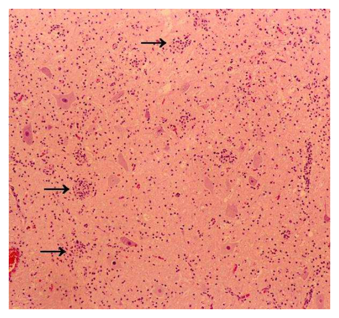
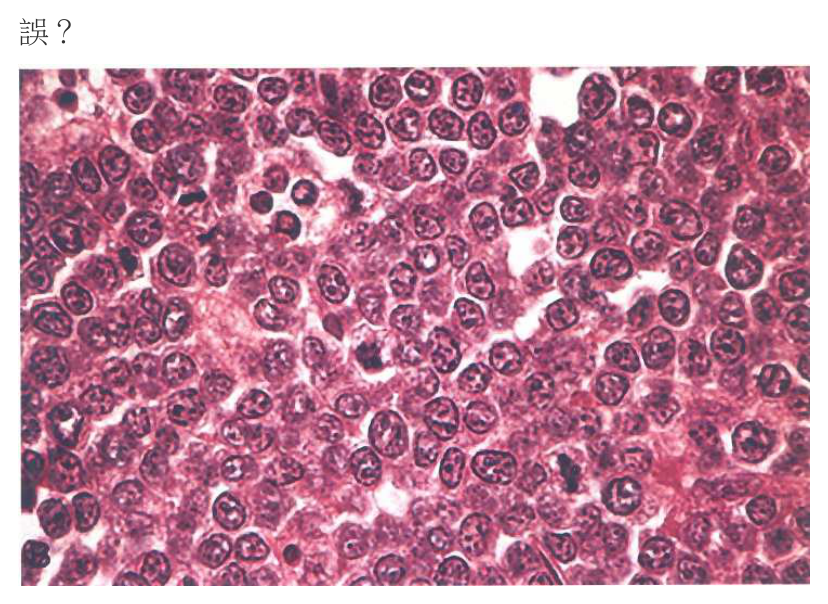
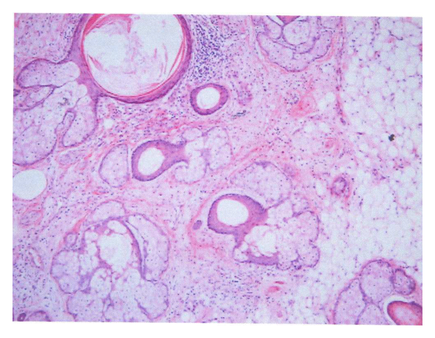

開卷有益 ／
醫師 ／ 醫學（二）（包括微生物免疫學、寄生蟲學、藥理學、病理學、公共衛生學等科目知識及其臨床之應用） ／ 107 年第 1 次107 年第 1 次醫師醫學（二）（包括微生物免疫學、寄生蟲學、藥理學、病理學、公共衛生學等科目知識及其臨床之應用）試題與答案
這一頁是民國 107 年第 1 次醫師醫學（二）（包括微生物免疫學、寄生蟲學、藥理學、病理學、公共衛生學等科目知識及其臨床之應用）的整份歷屆試題，共 100 題，題目與標準答案出自考選部「國家考試試題及測驗式試題答案」開放資料，其中 100 題附有詳解。以下逐題列出題幹、選項與答案；要計時作答或記錄成績，請用線上練習。
考選部原始場次代碼：107020
線上作答這一科 →
全部 100 題
第 1 題
下列何者非鬆脆類桿菌（Bacteroides fragilis）之特徵？
（A） 能水解七葉苷（esculin）（B） 能生長於含20%膽鹽（bile salt）的培養基（C） 能產生芽胞（spore）（D） 屬革蘭氏陰性桿菌答案：（C）
詳解與考點 正解：題目問非鬆脆類桿菌（Bacteroides fragilis）特徵。B. fragilis 是厭氧、革蘭氏陰性桿菌，能耐膽鹽並可水解七葉苷；它不會產生芽胞（spore），故選 C。
A：水解七葉苷（esculin）是 B. fragilis 的鑑別特徵之一，敘述正確，因此不是本題所問的非特徵。
B：B. fragilis 可在含膽鹽的培養基生長，這個耐膽鹽特性有助於與其他厭氧菌區分，敘述正確。
D：B. fragilis 屬革蘭氏陰性桿菌；名稱雖易讓人誤以為所有桿菌都可能形成芽胞，但芽胞形成是特定細菌類群的特徵，不能據桿狀外形推論。
本題考點：鬆脆類桿菌（Bacteroides fragilis）為腸道常見厭氧革蘭氏陰性桿菌；細菌芽胞（bacterial spore）形成並非所有桿菌共有的性質。
第 2 題
有關達托黴素（Daptomycin）之敘述，下列何者錯誤？
（A） 作用在細胞膜上（B） 屬脂胜肽（lipopeptides）藥物（C） 對多重抗藥性之嗜麥芽窄食單胞菌 (Stenotrophomonas maltophilia）有效（D） 可以治療抗萬古黴素（Vancomycin）之金黃色葡萄球菌（Staphylococcus aureus）所引起的疾病答案：（C）
詳解與考點 正解：題目問達托黴素（daptomycin）的錯誤敘述。達托黴素主要對革蘭氏陽性菌有效，對多重抗藥性之嗜麥芽窄食單胞菌（Stenotrophomonas maltophilia）這類革蘭氏陰性桿菌並無效，故錯誤的是 C。
A：達托黴素會嵌入細菌細胞膜並造成膜去極化，干擾膜功能，敘述正確。
B：達托黴素屬脂胜肽（lipopeptide）抗生素，敘述正確。
D：達托黴素可用於具抗藥性的革蘭氏陽性球菌感染，包括抗萬古黴素金黃色葡萄球菌（vancomycin-resistant Staphylococcus aureus）的感染情境；此選項符合其抗菌譜方向。
本題考點：達托黴素（daptomycin）是作用於細胞膜的脂胜肽（lipopeptide）；抗菌藥物選擇須先以革蘭氏染色與抗菌譜區分革蘭氏陽性菌及陰性菌。
第 3 題
有關類結核型痲瘋病（tuberculoid leprosy）及癩瘤型痲瘋病（lepromatous leprosy）的敘述，下列何者正確？
（A） 類結核型痲瘋病病灶組織中可以觀察到泡沫巨噬細胞（foamy macrophages），是癩瘤型痲瘋病所沒有的特徵（B） 類結核型痲瘋病患的細胞性免疫反應（cellular immune reaction）較癩瘤型痲瘋病患為強（C） 類結核型痲瘋病的傳染力較癩瘤型痲瘋病為高（D） 癩瘤型痲瘋病患之皮膚對麻瘋菌素（lepromin）測試呈陽性反應答案：（B）
詳解與考點 正解：比較類結核型痲瘋病（tuberculoid leprosy）與癩瘤型痲瘋病（lepromatous leprosy）的免疫反應。類結核型患者對麻瘋桿菌的細胞性免疫反應較強，能較有效限制菌量，故選 B。
A：泡沫巨噬細胞（foamy macrophages）內含大量麻瘋桿菌，是癩瘤型痲瘋病菌量高的典型表現，並非類結核型特徵。
C：類結核型的細胞性免疫較佳、菌量較低，傳染力通常較低；癩瘤型菌量高，才是傳染力較高的一端。
D：癩瘤型患者細胞性免疫反應弱，麻瘋菌素（lepromin）測試通常為陰性；此測試陽性較支持類結核型。
本題考點：類結核型痲瘋病（tuberculoid leprosy）具有較強的細胞性免疫（cell-mediated immunity）與低菌量；癩瘤型痲瘋病（lepromatous leprosy）則免疫反應弱、菌量高且 lepromin 多為陰性。
第 4 題
因感染結核分枝桿菌（Mycobacterium tuberculosis）而在肺部形成的肉芽腫（granuloma）中，主要可以觀察到下列那一種細胞？
（A） 滋養細胞（trophocyte）（B） 小膠質細胞（microglial cell）（C） 空泡細胞（koilocyte）（D） 蘭氏巨細胞（Langhans giant cell）答案：（D）
詳解與考點 正解：結核分枝桿菌（Mycobacterium tuberculosis）在肺內形成的是肉芽腫性發炎，活化巨噬細胞融合可形成多核的蘭氏巨細胞（Langhans giant cell），故選 D。
A：滋養細胞（trophocyte）不是肺結核肉芽腫的典型組成細胞，不能解釋結核性肉芽腫的多核巨細胞形態。
B：小膠質細胞（microglial cell）是中樞神經系統的常駐巨噬細胞，並非肺部結核肉芽腫的主要細胞。
C：空泡細胞（koilocyte）是人類乳突病毒感染相關的鱗狀上皮細胞變化，不是結核肉芽腫所見。
本題考點：結核性肉芽腫（tuberculous granuloma）由細胞性免疫（cell-mediated immunity）驅動；蘭氏巨細胞（Langhans giant cell）是活化巨噬細胞融合形成的多核巨細胞。
第 5 題
關於幽門螺旋桿菌（Helicobacter pylori）的敘述，下列何者錯誤？
（A） 人類為其主要的貯存宿主（reservoir），糞口途徑（fecal-oral route）為可能的傳染方式（B） 此菌可能會導致胃潰瘍（gastric ulcer）或十二指腸潰瘍（duodenal ulcer）（C） cagA（cytotoxin-associated gene A）陽性細菌的感染被認為與導致胃癌的高風險有關（D） 尿素呼氣試驗（urea breath test）是一種非侵入性的檢驗方法，但其敏感度與專一性都比傳統細菌培養差答案：（D）
詳解與考點 正解：題目問幽門螺旋桿菌（Helicobacter pylori）的錯誤敘述。尿素呼氣試驗（urea breath test）是非侵入性檢驗，偵測細菌尿素酶活性，臨床診斷效能通常很高；不能概括說其敏感度與專一性都比傳統培養差，故選 D。
A：人類是 H. pylori 的主要貯存宿主（reservoir），糞口途徑是可能傳播途徑，敘述正確。
B：H. pylori 感染與胃潰瘍（gastric ulcer）及十二指腸潰瘍（duodenal ulcer）相關，敘述正確。
C：cagA（cytotoxin-associated gene A）陽性菌株毒力較高，與胃癌風險增加相關，敘述正確。
本題考點：幽門螺旋桿菌（Helicobacter pylori）與消化性潰瘍及胃癌風險相關；尿素呼氣試驗（urea breath test）利用尿素酶活性，是常用的非侵入性診斷方法。
第 6 題
關於蠟狀桿菌（Bacillus cereus）的敘述，下列何者錯誤？
（A） 耐熱的（heat-stable）毒素可造成嘔吐型食物中毒（B） 大多數環境中可發現此菌（C） 產生超級抗原（superantigen），可造成嚴重組織壞死（necrosis）（D） 可造成眼球感染，例如桿菌型全眼球炎（Bacillus panophthalmitis）答案：（C）
詳解與考點 正解：題目問蠟狀桿菌（Bacillus cereus）的錯誤敘述。B. cereus 食物中毒與預形成毒素或腸毒素相關，並非以產生超級抗原（superantigen）造成嚴重組織壞死為典型機轉，故選 C。
A：耐熱毒素（heat-stable toxin）可引起以嘔吐為主的 B. cereus 食物中毒，敘述正確。
B：B. cereus 廣泛分布於環境，包括土壤與食物，敘述正確。
D：B. cereus 可造成嚴重眼部感染，如桿菌型全眼球炎（Bacillus panophthalmitis）；它雖不像食物中毒那樣常見，卻是重要的侵襲性感染表現。
本題考點：蠟狀桿菌（Bacillus cereus）可造成嘔吐型與腹瀉型食物中毒；超級抗原（superantigen）是特定細菌毒素的免疫活化機轉，不能任意套用於所有毒素性疾病。
第 7 題
下列那種細菌在培養基上生長有遊走（swarming）的特徵，且與腎臟結石（renal stones）生成最有關？
（A） 奇異變形桿菌（Proteus mirabilis）（B） 黏質沙雷氏菌（Serratia marcescens）（C） 產氣腸桿菌（Enterobacter aerogenes）（D） 肺炎克雷伯氏桿菌（Klebsiella pneumoniae）答案：（A）
詳解與考點 正解：題幹同時給出培養基上的遊走（swarming）與腎結石。奇異變形桿菌（Proteus mirabilis）有典型 swarming 生長，且其尿素酶可使尿液鹼化，促進感染性結石形成，故選 A。
B：黏質沙雷氏菌（Serratia marcescens）可造成院內感染，但不是典型 swarming 菌，也不是與尿素酶相關結石最具代表性的菌種。
C：產氣腸桿菌（Enterobacter aerogenes）不是此題所問的典型遊走菌，亦缺少與結石生成最直接的尿素酶線索。
D：肺炎克雷伯氏桿菌（Klebsiella pneumoniae）常以莢膜造成黏稠菌落為特徵；黏稠外觀看似可能與培養型態混淆，但不等於 Proteus 的同心圓遊走生長。
本題考點：奇異變形桿菌（Proteus mirabilis）的 swarming 是重要培養特徵；尿素酶（urease）使尿液鹼化，可促進感染性尿路結石（infection stone）形成。
第 8 題
關於放線菌（Actinomyces）的敘述，下列何者錯誤？
（A） 生長快速，且需要有氧的環境（B） 會形成含有硫磺狀顆粒（sulfur granules）的肉芽腫病變（C） 多數的感染始於頸顏部（cervicofacial area）（D） 可造成胸、腹部、骨盆腔、中樞神經系統的放線菌病（actinomycosis）答案：（A）
詳解與考點 正解：題目問放線菌（Actinomyces）的錯誤敘述。Actinomyces 通常是厭氧或微需氧、緩慢生長的革蘭氏陽性分枝狀菌，因此「生長快速，且需要有氧環境」錯誤，故選 A。
B：放線菌病病灶可形成硫磺狀顆粒（sulfur granules），是其常見病理與肉眼特徵，敘述正確。
C：頸顏部（cervicofacial area）是放線菌感染最常見的起始部位，常與口腔黏膜破損或牙科問題相關，敘述正確。
D：放線菌病（actinomycosis）也可侵犯胸部、腹部、骨盆腔及中樞神經系統，敘述正確。
本題考點：放線菌（Actinomyces）是緩慢生長的厭氧或微需氧分枝狀革蘭氏陽性菌；放線菌病（actinomycosis）的硫磺狀顆粒（sulfur granules）是重要辨識線索。
第 9 題
有關抗生素之敘述，下列何者正確？
（A） 克拉維酸（Clavulanic acid）通常被單獨使用（B） 甲氧葉酸嘧啶（Trimethoprim）抑制葉酸生成（C） 紅黴素（Erythromycin）抑制細胞壁的合成（D） 磺胺（Sulfonamide）抑制DNA旋轉酶（gyrase）答案：（B）
詳解與考點 正解：各抗生素作用位置。甲氧葉酸嘧啶（trimethoprim）抑制細菌二氫葉酸還原酶，阻斷四氫葉酸再生，因而抑制葉酸代謝，故選 B。
A：克拉維酸（clavulanic acid）是 β-內醯胺酶抑制劑，通常與 β-內醯胺抗生素併用以保護後者，並非通常單獨使用。
C：紅黴素（erythromycin）結合 50S 核糖體次單元而抑制蛋白質合成，不抑制細胞壁合成。
D：磺胺類（sulfonamide）抑制葉酸合成途徑中的二氫蝶酸合成酶；DNA 旋轉酶（gyrase）是氟喹諾酮類的主要作用標的。
本題考點：葉酸代謝抑制劑（folate pathway inhibitors）包括磺胺類與 trimethoprim；巨環類（macrolides）抑制蛋白質合成，氟喹諾酮類（fluoroquinolones）抑制 DNA gyrase。
第 10 題
本雅病毒（Bunyaviruses）大多藉由節肢動物傳播，然而下列何者例外？
（A） 漢坦病毒（Hantaan virus）（B） 裂谷熱病毒（Rift valley fever virus）（C） 加利福尼亞腦炎病毒（California encephalitis virus）（D） 克里米亞-剛果出血熱病毒（Crimean-Congo hemorrhagic fever virus）答案：（A）
詳解與考點 正解：題目問本雅病毒（bunyaviruses）中不主要藉節肢動物傳播的例外。漢坦病毒（Hantaan virus）主要由感染囓齒類排泄物形成的氣膠傳播給人，並非由節肢動物媒介，故選 A。
B：裂谷熱病毒（Rift Valley fever virus）可藉蚊子等節肢動物傳播，符合本雅病毒多為蟲媒病毒的原則。
C：加利福尼亞腦炎病毒（California encephalitis virus）由蚊媒傳播，敘述所屬傳播型態不是例外。
D：克里米亞－剛果出血熱病毒（Crimean-Congo hemorrhagic fever virus）主要與蜱媒傳播相關；蜱是節肢動物，因此不屬本題例外。
本題考點：本雅病毒（bunyaviruses）多為節肢動物媒介病毒（arboviruses）；漢坦病毒（Hantaan virus）則以囓齒類排泄物氣膠為主要傳播來源。
第 11 題
帶有下列那一種基因之同合子（homozygous）缺陷的人，對於人類免疫缺陷病毒（HIV）感染相對地具有抗性？
（A） 17p（p53）（B） HLA-B 5701（C） CCR5-delta 32（D） t（11；22）（q24；q12）答案：（C）
詳解與考點 正解：同合子缺陷可使人對 HIV 感染相對具抗性。CCR5-delta 32 同合子會使 CCR5 共同受體表現或功能顯著缺失，許多初期常見的 CCR5 嗜性 HIV 無法有效進入 CD4 T 細胞，故選 C。
A：17p（p53）與腫瘤抑制基因 p53 相關，不是 HIV 進入宿主細胞所需的共同受體。
B：HLA-B 5701 與特定免疫反應及藥物不良反應有關，但不是題目所問、由同合子缺陷造成的 HIV 入侵抗性機轉。
D：t（11；22）（q24；q12）是染色體易位的表示法，與 CCR5 共同受體缺失及 HIV 細胞進入無關。
本題考點：HIV 細胞進入（HIV entry）需要 CD4 與共同受體；CCR5-delta 32（CCR5-Δ32）同合子缺陷可降低對 CCR5 嗜性 HIV 的易感性。
第 12 題
關於小兒麻痺病毒（poliovirus）的敘述，下列何者正確？
（A） 其基因體是由雙股RNA所組成（B） 病毒套膜（envelope）上的醣蛋白質（glycoprotein）不容易產生突變（C） 病毒顆粒很穩定，可以透過下水道系統汙染水源造成感染（D） 沙克（Salk）減毒疫苗和沙賓（Sabin）死毒疫苗，常被用來預防其所引起的疾病答案：（C）
詳解與考點 正解：小兒麻痺病毒（poliovirus）的環境穩定性與糞口傳播。poliovirus 為無套膜病毒，病毒顆粒相對穩定，可經下水道污染水源並造成感染，故選 C。
A：poliovirus 屬小 RNA 病毒科，基因體是單股正股 RNA，不是雙股 RNA。
B：poliovirus 沒有病毒套膜（envelope），因此不可能有套膜上的醣蛋白質（glycoprotein）作為其特徵；這是將有套膜病毒的概念誤套到無套膜病毒。
D：沙克（Salk）疫苗是去活化疫苗，沙賓（Sabin）疫苗才是減毒活疫苗；兩者名稱與疫苗種類恰好顛倒。
本題考點：小兒麻痺病毒（poliovirus）是無套膜單股正股 RNA 病毒；無套膜病毒（non-enveloped virus）環境穩定性較高，常可經糞口途徑（fecal-oral route）傳播。
第 13 題
下列何種人類病毒最適合生長於攝氏33-35度，所以通常感染上呼吸道。不過，動物來源的此類病毒卻能生長在攝氏37度，因此能造成全身性感染？
（A） 間質肺炎病毒（Metapneumovirus）（B） 腺病毒（Adenovirus）（C） 呼吸道細胞融合病毒（Respiratory syncytial virus）（D） 冠狀病毒（Coronavirus）答案：（D）
詳解與考點 正解：人類冠狀病毒偏好 33-35°C、通常感染上呼吸道；部分動物冠狀病毒可在其動物宿主的 37°C 環境複製並造成全身性感染。此為冠狀病毒（coronavirus）的典型比較，故選 D。
A：間質肺炎病毒（metapneumovirus）可造成呼吸道感染，但不是此題以複製溫度與感染部位作區分的代表類群。
B：腺病毒（adenovirus）可感染呼吸道及其他器官，但本題的溫度偏好對照不是其典型鑑別點。
C：呼吸道細胞融合病毒（respiratory syncytial virus）以嬰幼兒下呼吸道疾病著稱，並非題幹所述的典型例子。
本題考點：冠狀病毒（coronavirus）的宿主適應（host adaptation）可影響組織嗜性（tropism）與複製溫度；人類與動物冠狀病毒的感染表現可不同。
第 14 題
有關病毒與其細胞受器（cell receptor）的配對，下列何者錯誤？
（A） EB病毒（Epstein-Barr virus）- CD21（B） 流感病毒（Influenza virus）- 水楊酸（sialic acid）（C） B19病毒（B19 virus） - 紅血球M抗原（erythrocyte M antigen）（D） 鼻病毒（Rhinovirus）- ICAM-1本題送分，無標準答案
詳解與考點 本題官方公告送分。
第 15 題
有關人類多瘤病毒（Human polyomavirus）的敘述，下列何者錯誤？
（A） 包括BK病毒及JC病毒（B） 不具有外套膜（envelope）（C） JC病毒感染免疫不全病人，常造成去髓鞘（demyelination）病變（D） T抗原可以活化p53，促進細胞死亡答案：（D）
詳解與考點 正解：題目問人類多瘤病毒（human polyomavirus）的錯誤敘述。多瘤病毒的大型 T 抗原會干擾 p53 等腫瘤抑制路徑、避免細胞週期停止或凋亡，並不是活化 p53 來促進細胞死亡，故選 D。
A：人類多瘤病毒包括 BK 病毒及 JC 病毒，敘述正確。
B：BK 與 JC 病毒為無外套膜（non-enveloped）DNA 病毒，敘述正確。
C：JC 病毒在免疫不全者可造成進行性多灶性白質腦病變，其核心病理是寡突膠細胞受損所致的去髓鞘（demyelination），敘述正確。
本題考點：人類多瘤病毒（human polyomavirus）包括 BK virus 與 JC virus；大型 T 抗原（large T antigen）透過抑制腫瘤抑制蛋白促進細胞週期進行，而非活化 p53。
第 16 題
下列何者為麴菌（Aspergillus spp.）之型態特徵？
（A） 具假根（rhizoid）（B） 具厚壁孢子（chlamydospores）（C） 菌絲（hyphae）無分隔（D） 具瓶狀（flask-shaped）孢子梗（phialides）答案：（D）
詳解與考點 正解：麴菌（Aspergillus spp.）的分生孢子構造。Aspergillus 有具分隔的菌絲，頂端形成囊泡，囊泡上排列瓶狀（flask-shaped）孢子梗細胞 phialides 並產生分生孢子，故選 D。
A：假根（rhizoid）是根黴菌等接合菌類的鑑別構造，不是 Aspergillus 的特徵。
B：厚壁孢子（chlamydospores）是某些真菌的休眠孢子型態，不能作為 Aspergillus 的典型形態標記。
C：無分隔菌絲（aseptate hyphae）較符合毛黴菌目等真菌；Aspergillus 的菌絲有分隔，且常呈銳角分枝。
本題考點：麴菌（Aspergillus）具有有分隔菌絲（septate hyphae）與 phialides；真菌形態學（fungal morphology）可用菌絲分隔、分枝及孢子構造鑑別。
第 17 題
下列那一種抗真菌（anti-fungal）藥物的抗藥機制，是在合成葡聚醣（glucan）的相關基因上產生突變？
（A） 氟胞嘧啶（Flucytosine）（B） 棘白素類（Echinocandins）（C） 丙烯胺類（Allylamines）（D） 兩性黴素B（Amphotericin B）答案：（B）
詳解與考點 正解：抗藥性來自合成葡聚醣（glucan）的相關基因突變。棘白素類（echinocandins）抑制 β-1,3-D-glucan synthase，若其相關基因突變，藥物對真菌細胞壁葡聚醣合成的抑制效果便會下降，故選 B。
A：氟胞嘧啶（flucytosine）的抗藥性多與藥物進入細胞或轉化為活性代謝物的路徑改變有關，不是葡聚醣合成基因突變。
C：丙烯胺類（allylamines）抑制角鯊烯環氧化酶，作用在麥角固醇合成途徑，不直接抑制葡聚醣合成。
D：兩性黴素 B（amphotericin B）與真菌細胞膜麥角固醇結合形成孔洞；它作用於細胞膜而非葡聚醣合成酶。
本題考點：棘白素類（echinocandins）抑制 β-1,3-D-glucan synthase，破壞真菌細胞壁（fungal cell wall）合成；不同抗真菌藥物須依細胞壁、細胞膜與核酸代謝作用點區分。
第 18 題
下列那一種分子在人類所有具有細胞核的細胞中都會表現？
（A） IL-1（B） IL-2（C） MHC-I（D） MHC-II答案：（C）
詳解與考點 正解：「所有具有細胞核的細胞」；MHC-I 表現在幾乎所有有核細胞的表面，用來呈現內生性抗原胜肽給 CD8+ T 細胞辨識，故選 C。成熟紅血球雖是人體細胞，但已無細胞核，正是此敘述的例外範圍。
A：IL-1 是發炎性細胞激素，主要由活化的巨噬細胞等細胞於發炎時分泌，並非每一種有核細胞都恆常表現。
B：IL-2 主要由活化的 T 細胞產生，以促進 T 細胞增殖；它是免疫活化後的訊號，不是普遍細胞表面分子。
D：MHC-II 主要表現在專業抗原呈現細胞，如樹突細胞、巨噬細胞與 B 細胞，呈現外源性抗原給 CD4+ T 細胞；看似同為 MHC 分子，分布卻不像 MHC-I 那樣普遍。
本題考點：主要組織相容性複合體第一類（major histocompatibility complex class I, MHC-I）表現於幾乎所有有核細胞並活化 CD8+ T 細胞；MHC-II 限於專業抗原呈現細胞並活化 CD4+ T 細胞；細胞激素（cytokine）的分泌具有細胞與情境特異性。
第 19 題
下列那一項為免疫球蛋白（immunoglobulin）基因重組（gene rearrangement）的起始步驟？
（A） 重鏈（heavy chain）之V,J剪接（B） 重鏈（heavy chain）之V,D剪接（C） 重鏈（heavy chain）之D,J剪接（D） 輕鏈（light chain）之V,J剪接答案：（C）
詳解與考點 正解：免疫球蛋白重鏈基因重組的「起始步驟」。重鏈可變區由 V、D、J 三段組成，必須先把 D 與 J 接合，之後才由 V 接到 DJ；完成重鏈後才進行輕鏈的 VJ 重組，故選 C。
A：重鏈沒有直接的 VJ 剪接步驟，V 必須接到已完成的 DJ 片段，省略 D 片段會破壞重鏈可變區的正確重組順序。
B：V 與 D 的接合發生在 DJ 已形成之後，故雖涉及重鏈重組，卻不是起始步驟。
D：輕鏈的確只進行 VJ 重組，但其發生在重鏈成功重組與表現之後；看似是較簡單的剪接形式，時間順序仍較晚。
本題考點：V(D)J 重組（V(D)J recombination）產生抗體多樣性；免疫球蛋白重鏈（immunoglobulin heavy chain）依序 D-J、V-DJ；輕鏈（light chain）則在重鏈後進行 V-J 重組。
第 20 題
有關不同CD4+ T細胞亞群（subset）的功能，下列敘述何者錯誤？
（A） 第一型輔助性T細胞（TH1）不會幫助巨噬細胞活化，及抗體之產生（B） 第二型輔助性T細胞（TH2）主要幫助B細胞產生抗體，以及幫助寄生蟲之清除（C） 調節性T細胞可藉由抑制抗原呈現細胞之功能，來抑制免疫反應之強度（D） 第十七型輔助性T細胞（TH17）會藉由幫助嗜中性白血球的趨化與活化，來控制早期的感染答案：（A）
詳解與考點 正解：題目問「何者錯誤」，關鍵是 TH1 的功能。TH1 分泌 IFN-γ，可活化巨噬細胞並協助細胞媒介性免疫，也能影響特定抗體反應；選項卻說 TH1「不會」幫助巨噬細胞活化及抗體產生，否定了其核心功能，故選 A。
B：TH2 促進 B 細胞產生抗體，並透過與嗜酸性白血球、IgE 相關的反應協助對抗蠕蟲等寄生蟲，敘述正確。
C：調節性 T 細胞可抑制抗原呈現細胞與效應 T 細胞的活化，限制免疫反應強度、維持耐受性，敘述正確。
D：TH17 相關細胞激素能招募並活化嗜中性白血球，對細胞外細菌與真菌的早期防禦重要，敘述正確。
本題考點：第一型輔助性 T 細胞（T helper 1, TH1）以巨噬細胞活化與細胞媒介性免疫為主；第二型輔助性 T 細胞（TH2）促進抗體與抗寄生蟲反應；第十七型輔助性 T 細胞（TH17）驅動嗜中性白血球反應。
第 21 題
下列有關自體耐受性（self tolerance）的觀念何者錯誤？
（A） 胸腺與骨髓是維持自我耐受性的重要器官（B） T淋巴細胞自胸腺成熟後，仍有調控機制在維持其周邊耐受性（C） 自胸腺分化來的調節性T細胞（regulatory T cell），可以抑制自體反應性T細胞的活性（D） 調節性T細胞（regulatory T cell）可有效清除腫瘤細胞答案：（D）
詳解與考點 正解：題目問自體耐受性何者錯誤；調節性 T 細胞的主要角色是抑制過強或自體反應性免疫，而非有效清除腫瘤。它可能反而抑制抗腫瘤 T 細胞反應，因此將其說成可有效清除腫瘤細胞不符其典型功能，故選 D。
A：T 細胞在胸腺、B 細胞在骨髓接受中樞耐受性篩選，兩者都是建立自我耐受性的重要器官，敘述正確。
B：成熟 T 細胞離開胸腺後，仍藉由無反應、刪除與調節性 T 細胞等機制維持周邊耐受性，敘述正確。
C：胸腺來源的調節性 T 細胞能抑制自體反應性 T 細胞，降低自體免疫風險，正是其維持耐受性的功能。
本題考點：中樞耐受性（central tolerance）在胸腺與骨髓篩除強自體反應性淋巴球；周邊耐受性（peripheral tolerance）以無反應、刪除及抑制維持；調節性 T 細胞（regulatory T cell）主要抑制免疫反應。
第 22 題
關於免疫球蛋白（抗體），下列敘述何者錯誤？
（A） 成熟的B淋巴球可製造特異性的免疫球蛋白（B） IgＭ能通過胎盤使新生兒獲得抗體（C） IgE濃度增加代表個體產生過敏反應或受寄生蟲感染（D） 每個抗體分子均由二對多肽鏈組成，共包含兩條重鏈與兩條輕鏈答案：（B）
詳解與考點 正解：題目問抗體何者錯誤；能經胎盤主動運輸、提供新生兒被動免疫的是 IgG，不是 IgM。IgM 分子較大且主要存在血管內，不能通過胎盤，故選 B。
A：成熟 B 淋巴球經活化與分化後可產生具有特異性的免疫球蛋白，敘述正確。
C：IgE 上升常見於第一型過敏反應與蠕蟲寄生蟲感染，因其可參與肥大細胞反應及嗜酸性白血球相關防禦，敘述正確。
D：典型免疫球蛋白由兩條相同重鏈與兩條相同輕鏈構成；看似有不同同型與鏈型，基本四鏈結構仍相同，敘述正確。
本題考點：免疫球蛋白 G（immunoglobulin G, IgG）可通過胎盤提供被動免疫；免疫球蛋白 M（IgM）是初次免疫反應常見抗體且不通過胎盤；抗體結構（antibody structure）為 2 條重鏈加 2 條輕鏈。
第 23 題
人類免疫缺乏病毒（HIV）經由 CD4 分子進入白血球時，經常利用下列何者當作共同接受體？
（A） CD40（B） CD40 ligand（C） CXCR4（D） CCR4答案：（C）
詳解與考點 正解：HIV 先與 CD4 結合後所需的共同接受體。HIV 的包膜蛋白接觸 CD4 後，還須與趨化激素受體結合才能促進膜融合；CXCR4 是常見共同接受體之一，故選 C。另一路徑常用 CCR5，但本題選項未列。
A：CD40 是抗原呈現細胞與 B 細胞上的共同刺激分子，主要和 T 細胞的 CD40 ligand 互動，不是 HIV 進入細胞的共同接受體。
B：CD40 ligand 表現在活化 CD4+ T 細胞，作用是協助 B 細胞活化與類別轉換，並非病毒入侵受體。
D：CCR4 雖也是趨化激素受體，卻不是 HIV 最典型的共同接受體；最具代表性的是 CCR5 與 CXCR4，因此此選項容易因同屬受體而成為誘答。
本題考點：人類免疫缺乏病毒（human immunodeficiency virus, HIV）入侵需要 CD4 加共同接受體；CXCR4 與 CCR5（chemokine co-receptors）決定病毒嗜性；病毒包膜融合（viral membrane fusion）是進入宿主細胞的關鍵步驟。
第 24 題
因為22對染色體部分缺損（22q11.2）而造成的DiGeorge症候群，下列何者不屬於其常見症狀？
（A） 甲狀腺發育不全（B） 胸腺發育不全（C） 先天性心臟病（D） 臉型異常本題送分，無標準答案
詳解與考點 本題官方公告送分。
第 25 題
人體內T細胞大量分泌那些細胞激素，與引發遲發型（delayed-type）過敏反應的臨床症狀最相關？
（A） IL-4 + IL-5（B） IL-5 + IL-17（C） IL-17 + IFN-γ（D） IFN-γ + IL-4答案：（C）
詳解與考點 正解：遲發型過敏反應，亦即以 T 細胞與巨噬細胞為主的第四型過敏。IFN-γ 會活化巨噬細胞，IL-17 可促進發炎細胞尤其嗜中性白血球的募集；兩者都能支持細胞媒介性發炎，最相關的是（C）IL-17 加 IFN-γ，故選 C。
A：IL-4 與 IL-5 偏向 TH2、IgE 與嗜酸性白血球反應，較符合第一型過敏或抗蠕蟲免疫，不是遲發型過敏的典型組合。
B：IL-5 有助嗜酸性白血球反應，與 IL-17 的組合缺少驅動巨噬細胞活化的 IFN-γ，非本題最典型的細胞媒介性組合。
D：IFN-γ 與 IL-4 分別代表 TH1 與 TH2 傾向；IL-4 偏向 IgE 反應，和遲發型過敏的主要發炎軸不如（C）一致。
本題考點：第四型過敏（type IV hypersensitivity）由 T 細胞介導並呈遲發反應；干擾素-γ（interferon-gamma, IFN-γ）活化巨噬細胞；介白素-17（interleukin-17, IL-17）促進嗜中性白血球相關發炎。
第 26 題
許多新的生物製劑及擬人化的單株抗體已經被發展出來，以治療自體免疫病，但不包括下列那一項？
（A） 抗CD20抗體（CD20-specific monoclonal antibody）治療類風濕性關節炎（rheumatoid arthritis）及紅斑性狼瘡（systemic lupus erythematosus）（B） 抗CD3抗體（CD3-specific monoclonal antibody）治療第一型糖尿病（type 1 diabetes mellitus）（C） 抗腫瘤壞死因子抗體（anti-TNF-α antibody）治療類風濕性關節炎（D） 抗DNA helicase抗體（anti-DNA helicase monoclonal antibody）治療紅斑性狼瘡答案：（D）
詳解與考點 正解：題目問自體免疫病生物製劑「不包括」何者。抗 DNA helicase 並非治療紅斑性狼瘡的既有標準標靶或代表性單株抗體，將核酸解旋酶直接列為治療標靶沒有相應的免疫治療邏輯，故選 D。
A：抗 CD20 抗體可減少 B 細胞，因而用於部分類風濕性關節炎與系統性紅斑性狼瘡的治療情境，敘述符合 B 細胞標靶治療原理。
B：抗 CD3 抗體可調節 T 細胞反應，和第一型糖尿病的自體反應性 T 細胞病理機轉有關，屬可發展的免疫調節策略。
C：TNF-α 是類風濕性關節炎重要發炎介質，抗 TNF-α 生物製劑可降低發炎與關節破壞，為代表性標靶治療。
本題考點：生物製劑（biologic agents）以特定免疫細胞或細胞激素為標靶；抗 CD20（anti-CD20 antibody）抑制 B 細胞；抗腫瘤壞死因子（anti-tumor necrosis factor-alpha, anti-TNF-α）治療發炎性自體免疫疾病。
第 27 題
腫瘤細胞有多種方式逃避免疫系統的偵查及消滅，而得以繼續長大，但不包括下列那一項？
（A） 不表現黏著分子（adhesion molecules）及共同刺激分子（co-stimulatory molecules）（B） 升高抗IgG抗體（anti-IgG antibody）之風濕因子（rheumatoid factor）以自我保護（C） 分泌出抑制T細胞作用的因子（D） 分泌出物質包裹自己，形成免疫優勢場所（tumor-induced privileged site）答案：（B）
詳解與考點 正解：題目問腫瘤逃避免疫機轉「不包括」何者。風濕因子是針對 IgG Fc 部位的自體抗體，並非腫瘤細胞藉以保護自身、逃避免疫偵查的典型機轉；升高抗 IgG 抗體的風濕因子無法構成此題所述的腫瘤免疫逃脫策略，故選 B。
A：腫瘤若缺乏黏著分子或共同刺激訊號，可削弱免疫細胞有效接觸與活化，屬可降低免疫辨識或效應的方式。
C：腫瘤分泌抑制 T 細胞的因子，可使腫瘤微環境偏向免疫抑制，減少抗腫瘤效應，敘述正確。
D：腫瘤可藉由局部免疫抑制性物質與屏障效應，造成不利免疫細胞進入與作用的微環境；看似描述不精確，仍是在指腫瘤誘發的免疫特權狀態。
本題考點：腫瘤免疫逃脫（tumor immune evasion）包括降低免疫辨識、減少共同刺激與建立免疫抑制微環境；腫瘤微環境（tumor microenvironment）可抑制效應 T 細胞；風濕因子（rheumatoid factor）不是典型腫瘤免疫逃脫機轉。
第 28 題
下列何種免疫調節劑是影響到適應性免疫反應（adaptive immune responses），而不同於一般細胞毒性藥物（cytotoxic agent）主要作用於所有正在分裂的細胞？
（A） Azathioprine（B） Cyclophosphamide（C） Mycophenolate（D） Rapamycin答案：（D）
詳解與考點 正解：相較於廣泛殺傷快速分裂細胞的細胞毒性藥物，何者以免疫訊號為主要標靶。rapamycin 直接抑制 IL-2 受體下游的 mTOR 訊號，阻斷 T 細胞增殖反應，故選 D。
A：azathioprine 干擾嘌呤代謝與核酸合成，對快速分裂細胞具有較廣泛的抗增殖作用，屬典型細胞毒性免疫抑制劑。
B：cyclophosphamide 為烷化劑，造成 DNA 損傷並影響分裂中的細胞，作用不侷限於適應性免疫細胞。
C：mycophenolate 抑制 de novo 嘌呤合成，對活化 T、B 淋巴球具相對選擇性；但本題命題分類著重 rapamycin 直接阻斷 mTOR 訊號，故 C 不是預期答案，兩者界線具有近似性。
本題考點：rapamycin 抑制 mammalian target of rapamycin, mTOR；mycophenolate 抑制 inosine monophosphate dehydrogenase, IMPDH 與淋巴球嘌呤合成；適應性免疫（adaptive immunity）以 T、B 淋巴球反應為核心。
第 29 題
下列那些寄生蟲會造成患者之自體感染（autoinfection）？①短小包膜絛蟲（Hymenolepis nana） ②菲律賓毛線蟲（Capillaria philippinensis） ③隱胞子蟲（Cryptosporidium parvum） ④糞小桿線蟲（Strongyloides stercoralis）
（A） 1種（B） 2種（C） 3種（D） 4種答案：（D）
詳解與考點 正解：本題是組合計數；四種寄生蟲都具有可在同一宿主內持續感染或反覆循環的自體感染機制。①短小包膜絛蟲可在腸內完成內源性自體感染；②菲律賓毛線蟲可使幼蟲在腸道內再感染；③隱胞子蟲可由薄壁卵囊造成自體感染；④糞小桿線蟲可由感染性幼蟲穿入腸壁或肛周皮膚再感染。因此共有 4 種，故選 D。
A：只計 1 種會漏掉其餘三種各自不同的自體感染途徑，數目不足。
B：只計 2 種同樣低估；自體感染不限於線蟲，短小包膜絛蟲與隱胞子蟲也可發生。
C：只計 3 種仍少 1 種；最容易漏列的是隱胞子蟲的薄壁卵囊，然而其正是自體感染的重要形式。
本題考點：自體感染（autoinfection）使寄生蟲在單一宿主內延續感染；短小包膜絛蟲（Hymenolepis nana）、菲律賓毛線蟲（Capillaria philippinensis）、隱胞子蟲（Cryptosporidium parvum）與糞小桿線蟲（Strongyloides stercoralis）皆可自體感染。
第 30 題
罹患內臟幼蟲移行症（visceral larva migrans）的病患通常有下列特徵，何者除外？
（A） 犬蛔蟲（Toxocara canis）為主要病原體（B） 常見肝腫大（C） 常見嗜酸性白血球增多（D） 大多發生於成年人答案：（D）
詳解與考點 正解：題目問內臟幼蟲移行症的特徵何者除外。此病多由幼童誤食犬蛔蟲卵後，幼蟲在內臟移行引起發炎，因此兒童較常見；「大多發生於成年人」與典型流行病學不符，故選 D。
A：犬蛔蟲是內臟幼蟲移行症最具代表性的病原體，敘述正確。
B：幼蟲常移行至肝臟，造成肝臟發炎與腫大，因此肝腫大是常見表現。
C：蠕蟲幼蟲在組織移行會誘發嗜酸性白血球反應，嗜酸性白血球增多是重要線索。
本題考點：內臟幼蟲移行症（visceral larva migrans）常由犬蛔蟲（Toxocara canis）造成；組織蠕蟲感染（tissue helminth infection）常見嗜酸性白血球增多；流行病學（epidemiology）以幼兒暴露受污染土壤或物品較具代表性。
第 31 題
下列絛蟲中，何者之成蟲體型最小？
（A） 多胞絛蟲（Echinococcus multilocularis）（B） 短小包膜絛蟲（Hymenolepis nana）（C） 縮小包膜絛蟲（Hymenolepis diminuta）（D） 犬複殖器絛蟲（Dipylidium caninum）答案：（A）
詳解與考點 正解：比較「成蟲體型最小」而非中間宿主或致病型態。多胞絛蟲的成蟲僅由少數體節組成、體長最短；其他包膜絛蟲與犬複殖器絛蟲成蟲均較長，故選 A。
B：短小包膜絛蟲雖因名稱帶有「短小」而容易被誤選，但其成蟲仍比多胞絛蟲長，不能以中文名稱取代實際形態比較。
C：縮小包膜絛蟲的成蟲體長較短小包膜絛蟲更長，並非本組最小。
D：犬複殖器絛蟲成蟲有多個體節，成蟲體長明顯大於多胞絛蟲，不符最小的條件。
本題考點：多胞絛蟲（Echinococcus multilocularis）的成蟲形態極小；絛蟲形態學（cestode morphology）須區分成蟲長度與幼蟲造成的病灶；包膜絛蟲（Hymenolepis）名稱中的大小不必然代表選項間的最小成蟲。
第 32 題
節肢動物可當下列那些絛蟲的中間宿主？①豬肉絛蟲（Taenia solium） ②犬複殖器絛蟲（Dipylidiumcaninum） ③縮小包膜絛蟲（Hymenolepis diminuta） ④單胞絛蟲（Echinococcus granulosus）
（A） ①③（B） ①④（C） ②③（D） ②④答案：（C）
詳解與考點 正解：本題依中間宿主分類逐一判斷。②犬複殖器絛蟲的中間宿主為跳蚤等節肢動物；③縮小包膜絛蟲以甲蟲等節肢動物為中間宿主。①豬肉絛蟲的中間宿主是豬，④單胞絛蟲的中間宿主是羊等草食動物，故正確組合為②③，即選 C。
A：①豬肉絛蟲不是以節肢動物為中間宿主，豬才是其典型中間宿主，故組合不對。
B：①與④皆不是節肢動物中間宿主；兩者分別涉及豬與羊等哺乳類宿主，錯在宿主類別。
D：②正確，但④單胞絛蟲的中間宿主不是節肢動物，因此組合少了③且誤納④。
本題考點：中間宿主（intermediate host）是幼蟲發育所需宿主；犬複殖器絛蟲（Dipylidium caninum）與縮小包膜絛蟲（Hymenolepis diminuta）可利用節肢動物；豬肉絛蟲（Taenia solium）與單胞絛蟲（Echinococcus granulosus）涉及哺乳類中間宿主。
第 33 題
下列敘述，何者錯誤？
（A） 齒齦阿米巴（Entamoeba gingivalis）的滋養體（trophozoites）會吞噬紅血球（B） 嗜碘阿米巴（Iodamoeba bütschlii）的滋養體具有一個很大的肝醣泡（glycogen vacuole）（C） 大腸纖毛蟲（Balantidium coli）是體型最大的人體寄生性原蟲（D） 大腸纖毛蟲（Balantidium coli）具有大核及小核答案：（B）
詳解與考點 正解：題目問何者錯誤，關鍵在嗜碘阿米巴的型態期別。嗜碘阿米巴的大型肝醣泡是囊體的鑑別特徵，不是滋養體的特徵；將它放在滋養體，混淆了囊體與滋養體，故選 B。
A：齒齦阿米巴的滋養體較常吞噬白血球、細菌及碎屑，亦曾極少見吞噬紅血球；因此此項在本題分類判讀下可視為正確，非答案。
C：大腸纖毛蟲是可寄生人體的原蟲中體型最大者，敘述正確。
D：大腸纖毛蟲具有大核與小核兩種細胞核，是其纖毛蟲類特徵，敘述正確。
本題考點：嗜碘阿米巴（Iodamoeba bütschlii）的囊體可見大型肝醣泡（glycogen vacuole）；滋養體與囊體（trophozoite and cyst）須分期辨識；大腸纖毛蟲（Balantidium coli）有大核與小核。
第 34 題
下列何者不屬於蜱媒介人畜共通感染症（tick-borne zoonoses）？
（A） 萊姆病（Lyme disease）（B） 西尼羅病毒症（West Nile）（C） 巴貝氏原蟲症（babesiosis）（D） 落磯山斑疹熱（Rocky Mountain spotted fever）答案：（B）
詳解與考點 正解：題目問不屬於蜱媒介人畜共通感染症者。西尼羅病毒主要由蚊子傳播，鳥類是重要自然宿主；它不是典型蜱傳疾病，故選 B。
A：萊姆病由蜱傳播伯氏疏螺旋體，屬代表性的蜱媒介人畜共通感染症。
C：巴貝氏原蟲可經蜱傳播，感染紅血球並造成類似瘧疾的溶血表現，屬蜱媒介疾病。
D：落磯山斑疹熱由蜱傳播立克次體，名稱雖含地名，傳播媒介確為蜱，敘述不屬於本題的除外項。
本題考點：蜱媒介人畜共通感染症（tick-borne zoonoses）包括萊姆病、巴貝氏原蟲症與落磯山斑疹熱；西尼羅病毒症（West Nile virus disease）主要為蚊媒傳播；病媒傳播（vector-borne transmission）須區分蜱與蚊。
第 35 題
下列何種疾病之病原體是經由體蝨（body louse）傳播？
（A） 流行性斑疹傷寒（epidemic typhus）（B） 地方性斑疹傷寒（endemic typhus）（C） 落磯山斑疹熱（Rocky mountain spotted fever）（D） 恙蟲病（scrub typhus）答案：（A）
詳解與考點 正解：體蝨傳播。流行性斑疹傷寒由普氏立克次體造成，病原可經體蝨及其糞便傳播，常和擁擠、衛生條件不佳的環境相關，故選 A。
B：地方性斑疹傷寒主要與鼠蚤等跳蚤傳播有關，不是體蝨。
C：落磯山斑疹熱由蜱傳播，和體蝨傳播的流行性斑疹傷寒不同；兩者同屬立克次體相關疾病，因而容易混淆。
D：恙蟲病由恙蟎幼蟲傳播，媒介是蟎而非體蝨。
本題考點：流行性斑疹傷寒（epidemic typhus）由體蝨（body louse）傳播；地方性斑疹傷寒（endemic typhus）主要為蚤媒；恙蟲病（scrub typhus）為恙蟎媒介。
第 36 題
某一世代型研究法不以暴露組與非暴露組選取研究對象，而以選取一個界定明確的群體為研究對象。此研究取樣方法最大的優點為何？
（A） 可以同時研究多個暴露因子（B） 可以降低研究成本（C） 可以較快完成研究工作（D） 可以完全解決干擾因素的影響答案：（A）
詳解與考點 正解：題幹描述的是從界定明確的群體建立世代，而不是先依暴露與否挑人。這種世代型研究可在同一群體內蒐集多種暴露資料，日後分別評估它們和疾病發生的關係，最大優點是可同時研究多個暴露因子，故選 A。
B：世代研究通常需要追蹤大量人群與較長時間，成本往往較高，不能以降低成本作為最大優點。
C：追蹤疾病發生需要時間，特別是潛伏期長的結果，通常不會較快完成。
D：干擾因素可用設計或統計方法控制，但不可能因為此取樣方法而完全解決，敘述過度絕對。
本題考點：世代研究（cohort study）由明確群體出發並追蹤暴露與疾病發生；前瞻性追蹤（prospective follow-up）可研究多個暴露因子；干擾（confounding）可控制但無法保證完全消除。
第 37 題
為了探討某社區之吸菸盛行狀況，由此社區隨機選取 100 位居民，發現其中 30 位居民具有吸菸習慣。在5% 的誤差水準下，此社區吸菸率的95％信賴區間之上限值為何？
（A） 0.32（B） 0.35（C） 0.39（D） 0.42答案：（C）
詳解與考點 正解：樣本吸菸率 30/100=0.30，求 95% 信賴區間上限。標準誤為 √[0.30×0.70/100]＝√0.0021≈0.0458；95% 誤差範圍為 1.96×0.0458≈0.0898；上限為 0.30+0.0898≈0.3898，四捨五入為 0.39，故選 C。
A：0.32 僅比樣本比例高 0.02，明顯低於依樣本變異計得的約 0.09 誤差範圍，低估不確定性。
B：0.35 對應的上升幅度約 0.05，仍小於 95% 信賴區間所需的約 0.09。
D：0.42 對應的上升幅度約 0.12，超過以本題樣本數與比例計算的 95% 誤差範圍；看似保守，卻不是本題計算值。
本題考點：樣本比例（sample proportion）p=x/n；比例的標準誤（standard error）為 √[p(1-p)/n]；95% 信賴區間（95% confidence interval）近似為 p±1.96×標準誤。
第 38 題
某研究者想探討酒駕與死亡車禍的關係，所以在某縣市統計半年的車禍資料，將車禍分為是否有人員24小時內死亡，並調查每次車禍中開車者是否有酒駕行為，下列統計分析方法何者最恰當？
（A） 線性迴歸（Linear regression）（B） 獨立樣本t檢定（Independent sample t-test）（C） 配對t檢定（Paired t-test）（D） 卡方檢定（Chi-square test）答案：（D）
詳解與考點 正解：題目中的酒駕與「是否於24小時內死亡」都是類別變項，目的在比較兩個類別變項是否有關聯，應將資料整理成酒駕／未酒駕與死亡／未死亡的列聯表，再以卡方檢定（chi-square test）檢驗其分布是否獨立，故選 D。
A：線性迴歸（linear regression）用於連續型結果變項與預測因子的線性關係；本題結果是死亡與否，非連續數值，模型型態不適合。
B：獨立樣本 t 檢定比較兩個獨立群組的「連續變項平均值」，例如兩組的平均血壓；本題沒有要比較的連續平均值。
C：配對 t 檢定用於同一受試者前後測或配對個體的連續數值差異；車禍個案的酒駕與死亡狀態既非配對資料，也非連續數值。
本題考點：列聯表（contingency table）用來交叉呈現兩個類別變項；卡方檢定（chi-square test）檢驗類別變項間的獨立性或關聯性；t 檢定（t-test）則是比較連續變項的平均數。
第 39 題
二次侵襲率主要用以測量下列何種疾病分布狀況？
（A） 暴露於特定病原後而罹患疾病之個案分布（B） 接觸罹病個案後而染病之個案分布（C） 暴露於特定病原後而罹患疾病者於群體之百分比（D） 接觸罹病個案後染病者於所有接觸罹病個案之百分比答案：（D）
詳解與考點 正解：「接觸罹病個案後」。二次侵襲率（secondary attack rate）衡量指標個案出現後，其接觸者中在一段觀察期間內發病者的比例，分子是接觸者中的續發病例，分母是所有易感接觸者，故選 D。
A：暴露於特定病原後的個案分布未限定為接觸一名已罹病的指標個案，也未表達接觸者分母，較不是二次侵襲率的定義。
B：此選項提到接觸後染病，但只說個案分布，沒有以所有接觸者作分母；它看似貼近傳染鏈，卻缺少「率」所必需的分母。
C：暴露後罹病者占整個群體的百分比，描述的是一般發生頻率，未限於指標個案的接觸者，不能衡量家庭、宿舍等密切接觸環境中的續發傳播。
本題考點：二次侵襲率（secondary attack rate）評估指標病例後密切接觸者的續發感染比例；侵襲率（attack rate）是特定暴露群體在疫情期間發病的比例；分子與分母的界定是流行病學指標判讀的核心。
第 40 題
某國際性研究調查全世界 50 個國家的女性（15－49歲）生育率（fertility rate, 以Y表示）與已婚婦女避孕率（percentage contraception, 以X表示）的關係，利用簡單線性迴歸得到Y＝6.8-0.08X，且Y與X的Pearson相關係數為 -0.4，下列敘述何者正確？
（A） 已婚婦女避孕率每增加一單位，平均生育率的值會增加 6.8（B） 生育率的變異有 40% 可以被已婚婦女避孕率解釋（C） 生育率的變異有 16% 可以被已婚婦女避孕率解釋（D） 已婚婦女避孕率每增加一單位，平均生育率的值會降低 0.4答案：（C）
詳解與考點 正解：Pearson 相關係數 r＝-0.4；簡單線性迴歸中可被 X 解釋的 Y 變異比例為決定係數 R²＝r²。逐步計算：R²＝(-0.4)²＝0.16=16%，所以生育率變異有 16% 可由已婚婦女避孕率的線性關係解釋，故選 C；迴歸式的斜率另顯示 X 每增加 1 單位，Y 平均下降 0.08。
A：6.8 是迴歸截距，表示 X=0 時模型預測的平均生育率，不是避孕率每增加 1 單位的變化量；每增加 1 單位應看斜率 -0.08。
B：-0.4 的絕對值不是可解釋變異比例。相關係數要平方後才得到決定係數，因此不是 40% 而是 16%。
D：-0.4 是 Pearson 相關係數，表示線性相關的方向與強度；它看似同為負值而容易被誤當成斜率，但實際每單位 X 的平均變化應由迴歸式中的 -0.08 判讀。
本題考點：簡單線性迴歸（simple linear regression）的斜率代表預測變項每增加 1 單位時結果變項的平均改變；Pearson 相關係數（Pearson correlation coefficient）描述線性相關；決定係數（coefficient of determination, R²）在此為 r²，表示可解釋的變異比例。
第 41 題
進行統計檢定，當根據數據計算所得之p值＞α（顯著水準）時，下列敘述何者正確？
（A） 可以正確推翻虛無假設（B） 證據不足以推翻虛無假設（C） 可以正確接受虛無假設（D） 可能犯型I錯誤答案：（B）
詳解與考點 正解：p 值大於顯著水準 α。這表示在虛無假設（null hypothesis）為真時，觀察到目前或更極端資料的證據不足以達到預先設定的拒絕門檻，因此結論是「未能拒絕虛無假設」，亦即證據不足以推翻它，故選 B。
A：推翻虛無假設必須在 p 值小於或等於 α 時才有統計上的拒絕依據；本題 p＞α，不符合拒絕條件。
C：未能拒絕不等於可以證明或正確接受虛無假設。p＞α 可能是確無差異，也可能是樣本數或檢定力不足，故此敘述過度延伸。
D：型 I 錯誤是虛無假設其實為真卻遭拒絕；本題的決策是不拒絕虛無假設，並非型 I 錯誤的情境。
本題考點：p 值（p-value）用來衡量資料與虛無假設的相容程度；顯著水準（significance level, α）是拒絕門檻；未能拒絕虛無假設（fail to reject the null hypothesis）不能解讀為證實虛無假設。
第 42 題
受重金屬污染的土壤，不適合使用那個整治技術？
（A） 蒸氣萃取法（B） 氧化還原法（C） 土壤淋洗法（D） 生物處理法答案：（A）
詳解與考點 正解：污染物為「重金屬」。蒸氣萃取法（soil vapor extraction）主要藉抽取土壤孔隙氣體移除具揮發性的有機污染物；重金屬是元素，不能靠揮發成氣體後抽出來，因此不適合，故選 A。
B：氧化還原法可改變部分金屬的價態、溶解度或移動性，例如促使其固定化，能作為重金屬整治策略之一。
C：土壤淋洗法以洗液將土粒表面的金屬污染物轉移至液相，再處理洗出液；對可被洗脫的金屬污染土壤可以使用。
D：生物處理法可利用植物吸收、微生物轉化或固定金屬；它看似常與有機污染物的生物降解連結，但重金屬雖不能被降解，仍可透過生物累積或固定來整治。
本題考點：土壤蒸氣萃取（soil vapor extraction）適用揮發性有機污染物；重金屬整治（heavy-metal remediation）可採土壤淋洗、價態調控或生物復育；元素污染物不能以生物降解消失。
第 43 題
水中那一個物質的存在最能代表最近剛受到糞便的污染？
（A） NH3-N（B） NO2--N（C） NO3--N（D） N2O5-N答案：（A）
詳解與考點 正解：「最近剛受到糞便污染」。含氮有機物進入水中後，會先經氨化作用形成氨氮（NH3-N），之後才依序硝化為亞硝酸鹽氮與硝酸鹽氮。因此 NH3-N 的存在最能反映新近的糞便性有機污染，故選 A。
B：NO2--N 是硝化過程的中間產物，可見於氨氮正在被氧化的階段，但不是新鮮糞便污染最直接的代表。
C：NO3--N 是較完全氧化後的產物，通常反映污染已經歷較長的硝化過程；它看似也是含氮污染指標，卻較不特異於「最近剛」發生的污染。
D：N2O5-N 並非水質中用來判定新近糞便污染的常規氮型態指標，無法作為本題答案。
本題考點：氨化作用（ammonification）將有機氮轉為氨氮；硝化作用（nitrification）依序將氨氮氧化為亞硝酸鹽氮與硝酸鹽氮；水中氮型態可協助推估污染的新舊。
第 44 題
一般而言，針對每項污染物，空氣品質標準常有長時間值與短時間值（例：日平均值與小時平均值），二者何者較低？
（A） 一樣（B） 長時間值（C） 短時間值（D） 依污染物不同改變答案：（B）
詳解與考點 正解：同一污染物比較長時間平均值與短時間平均值。長時間標準用以控制持續性慢性暴露，通常須採較低濃度；短時間標準用以控制急性尖峰，因容許時間較短而通常較高，故選 B。
A：兩種平均時間代表不同的健康保護目的；以相同數值管制，無法分別處理急性高濃度暴露與長期累積暴露。
C：短時間值主要限制急性尖峰暴露，通常可高於長時間平均值；把它說成較低，顛倒了常見的標準設計。
D：不同污染物的絕對限值確會不同，但題目問的是同一污染物的兩種平均時間值之一般關係，通常為長時間值較低。
本題考點：空氣品質標準（air quality standard）可同時設長時間與短時間平均；長時間暴露（chronic exposure）著重持續性健康風險；短時間暴露（acute exposure）著重尖峰濃度的急性危害。
第 45 題
國際癌症研究機構（International Agency for Research on Cancer，簡稱IARC）將紫外線歸類為何種致癌物質？
（A） 已知（known）人類致癌物質（B） 極可能（probable）人類致癌物質（C） 疑似（possible）人類致癌物質（D） 無法歸類（not classifiable）之人類致癌物質本題送分，無標準答案
詳解與考點 本題官方公告送分。
第 46 題
造成大氣臭氧層破洞，地球生物圈會暴露更多輻射線，增加人類的皮膚癌。為了避免臭氧層被破壞應管制排放的氣體是：
（A） 一氧化碳（B） 氟氯化碳（C） 二氧化氮（D） 二氧化硫答案：（B）
詳解與考點 正解：臭氧層破洞與增加紫外線暴露。氟氯化碳（chlorofluorocarbons, CFCs）進入平流層後可釋出氯自由基，催化分解臭氧，使地表接收更多紫外線，增加皮膚癌等健康風險；因此應管制的是氟氯化碳，故選 B。
A：一氧化碳主要造成與血紅素結合的毒性，並參與大氣化學反應，但不是造成平流層臭氧破壞的主要受管制物質。
C：二氧化氮是氮氧化物，與光化學煙霧及地表臭氧生成關係密切；它看似也與「臭氧」有關，但本題問的是平流層臭氧層破壞，機轉不同。
D：二氧化硫主要與酸雨及粒狀污染相關，非典型的臭氧層破洞成因。
本題考點：平流層臭氧（stratospheric ozone）吸收有害紫外線；氟氯化碳（chlorofluorocarbons, CFCs）可產生催化臭氧分解的氯自由基；地表臭氧（tropospheric ozone）與臭氧層是不同的環境衛生議題。
第 47 題
社會流行病學的研究取向，不具下述那一項特點？
（A） 個人行為的社會性分析（social characteristics）（B） 高風險個體預防策略（high-risk preventive strategy）（C） 群體預防策略（population preventive strategy）（D） 關心疾病的遠因（distal causes）或根本原因（root causes）答案：（B）
詳解與考點 正解：社會流行病學關注健康差異如何由社會結構、生活條件與權力資源分配形塑，重點在群體層次與疾病的遠因。以辨識並介入「高風險個體」為中心的策略，並非其典型研究取向，故不具該特點的是 B。
A：社會流行病學會將個人行為置於社會階層、工作、居住環境與社會網絡中理解，因此個人行為的社會性分析符合其取向。
C：群體預防策略著眼於改變群體的暴露分布與社會環境，與社會流行病學從人口層次改善健康不平等的觀點相符。
D：遠因或根本原因例如貧窮、教育、歧視與資源分配，正是社會流行病學要追問的上游決定因素。
本題考點：社會流行病學（social epidemiology）研究社會條件與健康分布的關係；遠因（distal causes）與根本原因（root causes）是上游健康決定因子；群體預防策略（population preventive strategy）著重整體暴露分布而非只鎖定高風險個人。
第 48 題
與精神醫學相比較，公共心理衛生具有何種特性？
（A） 強調症狀治療與病情改變（B） 注重個人遺傳與生物因素（C） 重視社區組織和社區參與（D） 加強隔離病人以保護社區答案：（C）
詳解與考點 正解：「公共心理衛生」相對於以個別患者診療為中心的精神醫學。公共心理衛生將心理健康促進、預防、早期介入與復元支持放在社區脈絡中推動，強調社區組織與居民參與，故選 C。
A：症狀治療與病情改變主要是臨床精神醫學的個別醫療取向，不是公共心理衛生最具區別性的特性。
B：個人遺傳與生物因素是精神疾病病因學的重要面向，但公共心理衛生更著重社會環境、資源與社區支持系統。
D：公共心理衛生以社區融合、去汙名與可近性服務為方向；單以隔離病人保護社區的思維，反而不符合其社區取向。
本題考點：公共心理衛生（public mental health）著重整體人口的心理健康促進與疾病預防；社區參與（community participation）讓居民共同規劃及運用支持資源；社區精神醫學（community psychiatry）強調在地、整合與持續照護。
第 49 題
醫師法所稱之醫師不包括下列那一項？
（A） 中醫師（B） 獸醫師（C） 醫師（D） 牙醫師答案：（B）
詳解與考點 正解：醫師法所稱的醫師範圍。醫師法下的醫師包含醫師、中醫師與牙醫師；獸醫師有其專業執業與管理體系，並不屬於醫師法所稱的醫師，故選 B。
A：中醫師屬醫師法所稱醫師的類別，並非本題要排除的對象。
C：「醫師」本身當然屬於醫師法所稱的醫師，敘述正確。
D：牙醫師亦屬醫師法所稱醫師的類別，與獸醫師的法規範疇不同。
本題考點：醫師法（Physicians Act）規範醫師、中醫師與牙醫師的執業事項；獸醫師（veterinarian）屬不同專業法律體系；專業人員的法定定義須依其適用法規辨識。
第 50 題
目前臺灣是一「高齡化、少子化」的社會，此敘述反應出下列何種人口金字塔？
（A） 都市型（B） 農村型（C） 靜止型（D） 減少型答案：（D）
詳解與考點 正解：「高齡化、少子化」。少子化使金字塔底部的幼年人口縮窄，高齡化則使上部相對寬大，代表人口自然增加趨緩甚至減少的減少型人口金字塔（constrictive population pyramid），故選 D。
A：都市型並非依年齡結構用來描述少子高齡的人口金字塔基本分類，不能由題幹直接推得。
B：農村型通常不等同於特定的少子高齡金字塔類型；居住地分類無法取代年齡結構判讀。
C：靜止型人口金字塔的各年齡層較為均衡，人口規模大致穩定；本題強調少子與高齡，較符合底部縮窄的減少型。
本題考點：人口金字塔（population pyramid）以年齡與性別呈現人口結構；減少型（constrictive type）特徵為低生育、幼年人口比例下降與高齡化；靜止型（stationary type）則是各年齡層較均衡、人口相對穩定。
第 51 題
關於藥物動力學的敘述，下列何者錯誤？
（A） 親脂性藥物較親水性藥物容易被身體快速吸收（B） 藥物可藉由細胞與細胞之間的水性孔（aqueous pores）進行被動滲透，可容許的最大分子量為不超過1,000（C） 藥物可藉由與細胞膜上特定載體結合而通過細胞膜進入細胞（D） 藥物可以藉由胞吞作用（endocytosis）進入細胞答案：（B）
詳解與考點 正解：本題問錯誤敘述，關鍵是細胞間水性孔（aqueous pores）的通透性。水性孔只能讓極小、親水性的分子被動通過，不能以「不超過 1,000」作為可容許的最大分子量；此數值過大，故錯誤的是 B。
A：親脂性藥物較容易穿越富含脂質的細胞膜，通常較親水性藥物容易經被動擴散吸收，敘述正確。
C：部分藥物可和細胞膜上的特定載體結合，經促進性擴散或主動運輸進入細胞，敘述正確。
D：胞吞作用（endocytosis）可讓某些大分子物質進入細胞，雖非多數小分子藥物的主要吸收途徑，但作為藥物跨膜機制的敘述正確。
本題考點：被動擴散（passive diffusion）主要受藥物脂溶性與濃度梯度影響；水性孔（aqueous pores）僅通過極小親水分子；載體媒介運輸（carrier-mediated transport）與胞吞作用（endocytosis）是其他跨膜途徑。
第 52 題
下列何種抗凝血劑屬於直接作用於thrombin之抑制劑？
（A） heparin（B） enoxaparin（C） fondaparinux（D） argatroban本題送分，無標準答案
詳解與考點 本題官方公告送分。
第 53 題
下列何種藥物，可以用於男性性慾過強之治療？
（A） cyproterone（B） clomiphene（C） danazol（D） goserelin答案：（A）
詳解與考點 正解：cyproterone 具抗雄性素作用，可抑制雄性素受體作用並降低性衝動，是男性異常性衝動的傳統治療用途，故本題命題預期選 A。
B：clomiphene 是選擇性雌激素受體調節劑（selective estrogen receptor modulator, SERM），可促進性腺軸分泌，常用於誘發排卵或特定男性不孕情況，非降低男性性慾的藥物。
C：danazol 具有雄性素樣及抑制性腺軸的作用，主要用於特定婦科疾病等，並非本題所問的標準抗雄性素治療。
D：goserelin 是促性腺激素釋放素類似物（GnRH analogue），持續使用可抑制性腺功能並降低睪固酮，可能降低性慾；其主要核准用途不同，於此多屬非例行或標示外使用。題幹僅問「可以用於」，故與 A 的界線存在爭議。
本題考點：抗雄性素（antiandrogen）抑制雄性素受體作用或降低雄性素效應；cyproterone 可降低病理性性衝動；促性腺激素釋放素類似物（GnRH analogue）持續給予後會抑制性腺軸。
第 54 題
下列何種合成的雌激素，可以作為口服避孕藥（oral contraceptives）使用？
（A） danazol（B） desogestrel（C） mestranol（D） letrozole答案：（C）
詳解與考點 正解：「合成的雌激素」且可作口服避孕藥。mestranol 是合成雌激素，經代謝後產生活性雌激素效應，曾用於口服避孕藥配方，故選 C。
A：danazol 是具雄性素樣作用的合成類固醇，不是用於口服避孕的合成雌激素。
B：desogestrel 是合成黃體素（progestin），雖可作複方或單方口服避孕藥的成分，但它不是題目所問的雌激素。
D：letrozole 是芳香環酶抑制劑（aromatase inhibitor），降低雌激素生成，與提供雌激素的口服避孕藥作用方向相反。
本題考點：mestranol 是合成雌激素（synthetic estrogen）；口服避孕藥（oral contraceptives）可含雌激素與黃體素（progestin）成分；芳香環酶抑制劑（aromatase inhibitor）降低雌激素合成。
第 55 題
那一種利尿劑會使病人血鉀增加？
（A） spironolactone（B） bumetanide（C） acetazolamide（D） furosemide答案：（A）
詳解與考點 正解：會使血鉀增加的利尿劑。spironolactone 阻斷遠曲腎元後段與集尿管的醛固酮受體，減少鈉再吸收及鉀分泌，屬保鉀利尿劑（potassium-sparing diuretic），可使血鉀上升，故選 A。
B：bumetanide 是亨利氏環利尿劑（loop diuretic），增加鈉送至遠端腎元，促進鉀分泌，常造成低血鉀。
C：acetazolamide 是碳酸酐酶抑制劑（carbonic anhydrase inhibitor），增加碳酸氫鹽與鈉的排出，亦可能增加遠端鉀流失，不是保鉀利尿劑。
D：furosemide 同為亨利氏環利尿劑，利尿效果強且會增加鉀排泄；它看似常用於水腫而易與各類利尿劑混淆，但典型電解質副作用是低血鉀。
本題考點：醛固酮受體拮抗劑（aldosterone antagonist）如 spironolactone 屬保鉀利尿劑；亨利氏環利尿劑（loop diuretic）常造成低血鉀；遠端鈉輸送增加會促進鉀分泌。
第 56 題
下列何種毒物，會阻斷鈉離子通道而抑制神經動作電位之傳導？
（A） botulinum toxin（B） ω-conotoxin GVIA（C） α-latrotoxin（D） tetrodotoxin答案：（D）
詳解與考點 正解：「阻斷鈉離子通道」而抑制動作電位傳導。tetrodotoxin 直接阻斷電壓閘控鈉離子通道（voltage-gated sodium channel），使鈉離子內流受阻、無法產生或傳導神經動作電位，故選 D。
A：botulinum toxin 在突觸前神經末梢抑制乙醯膽鹼囊泡釋放，造成神經肌肉接頭傳遞障礙，並非阻斷鈉離子通道。
B：ω-conotoxin GVIA 阻斷特定電壓閘控鈣離子通道，減少突觸前鈣離子內流與神經傳遞物質釋放，作用標的不是鈉離子通道。
C：α-latrotoxin 會促進神經末梢傳遞物質釋放；它看似同樣影響神經傳遞，但方向是異常促進釋放，非直接阻斷動作電位的鈉離子通道。
本題考點：電壓閘控鈉離子通道（voltage-gated sodium channel）啟動神經動作電位；tetrodotoxin 阻斷鈉離子通道；突觸前鈣離子通道（presynaptic calcium channel）與乙醯膽鹼釋放則屬不同的神經毒素作用位置。
第 57 題
下列何種藥物除了常用於治療痛風外，對新生兒動脈導管閉鎖不全也有促進其關閉的作用？
（A） indomethacin（B） etodolac（C） ketoprofen（D） naproxen答案：（A）
詳解與考點 正解：痛風治療藥且能促進新生兒動脈導管關閉。indomethacin 是非類固醇消炎止痛藥（NSAID），可抑制環氧化酶（cyclooxygenase, COX）並降低前列腺素生成；前列腺素有維持動脈導管開放的作用，降低其濃度可促進動脈導管關閉，故選 A。
B：etodolac 是 NSAID，可用於疼痛與發炎，但不是促進新生兒動脈導管關閉的典型考題藥物。
C：ketoprofen 亦為 NSAID，具有抗發炎止痛效果；它看似與 indomethacin 同類，但本題問的是兼具痛風治療與促進動脈導管關閉的特定藥物。
D：naproxen 可用於急性痛風的抗發炎止痛，卻不是本題所指用於促進新生兒動脈導管關閉的藥物。
本題考點：indomethacin 是非類固醇消炎止痛藥（nonsteroidal anti-inflammatory drug, NSAID）；環氧化酶抑制（cyclooxygenase inhibition）降低前列腺素生成；動脈導管（ductus arteriosus）的持續開放與前列腺素作用有關。
第 58 題
下列那一種症狀不屬於長期吸食鴉片類藥物的戒斷現象？
（A） 流淚（lacrimation）（B） 心跳及血壓下降（C） 精神亢奮（agitation）（D） 失眠症（insomnia）答案：（B）
詳解與考點 正解：「鴉片類藥物戒斷」；戒斷時失去 opioid 對交感神經的抑制，會出現自主神經亢進，而非心跳與血壓下降。典型表現包括流淚、流鼻水、瞳孔放大、出汗、腹瀉、焦躁與失眠；因此（B）心跳及血壓下降不屬於戒斷現象，故選 B。
A：流淚是 opioid 戒斷早期常見的自主神經症狀，與流鼻水、打呵欠可一併出現，敘述正確，故不是答案。
C：精神亢奮或焦躁反映戒斷時去甲腎上腺素能活動增強；它看似可與藥物中毒時的精神狀態混淆，但 opioid 中毒較常見鎮靜與呼吸抑制，故（C）是戒斷表現。
D：失眠是 opioid 戒斷的常見症狀，常與不安、肌肉痠痛及強烈渴求藥物併存，故非答案。
本題考點：鴉片類戒斷（opioid withdrawal）會造成交感神經亢進與腸胃蠕動增加；鴉片類中毒（opioid intoxication）則以縮瞳、鎮靜、呼吸抑制為代表。
第 59 題
下列何種藥物主要是用於治療銅（copper）中毒？
（A） dimercaprol（B） penicillamine（C） melarsoprol（D） deferoxamine答案：（B）
詳解與考點 正解：銅中毒的螯合治療。penicillamine 可與銅形成可排出的複合物，是治療銅蓄積疾病與銅中毒的常用銅螯合劑，故選 B。
A：dimercaprol 是含巰基的螯合劑，主要用於砷、汞、金等重金屬中毒；雖可與某些金屬結合，並非本題銅中毒的主要用藥。
C：melarsoprol 是含砷的抗原蟲藥，用於晚期非洲錐蟲病，並不是金屬中毒的螯合劑。
D：deferoxamine 對鐵具有高度親和力，主要用於急性鐵中毒或鐵負荷過多；「同是螯合劑」容易誤選，但其標的金屬是鐵而非銅。
本題考點：螯合治療（chelation therapy）依金屬選藥；penicillamine 螯合銅，deferoxamine 螯合鐵，dimercaprol 用於特定重金屬中毒。
第 60 題
下列投藥路徑，何者較易產生首渡效應（first-pass effect）？
（A） 直腸給藥（rectal）（B） 經皮吸收（transdermal patch）（C） 舌下給藥（sublingual）（D） 口服給藥（oral）答案：（D）
詳解與考點 正解：首渡效應，亦即藥物自腸道吸收後先經門靜脈進入肝臟，在進入全身循環前已被腸壁或肝臟代謝。口服藥物最典型地走此路徑，故最易受首渡代謝影響的是（D）口服給藥，故選 D。
A：直腸給藥的下直腸靜脈可直接進入體循環，因此可部分避開肝臟首渡代謝，並非最容易發生。
B：經皮吸收後直接進入全身循環，避開腸胃道與門靜脈系統，故不具典型首渡效應。
C：舌下給藥經口腔黏膜吸收並進入體循環，常用來避開首渡代謝、加快起效，故非答案。
本題考點：首渡效應（first-pass effect）是口服藥物在到達體循環前的腸肝代謝；舌下、經皮與部分直腸給藥可避開或減少此效應。
第 61 題
Sulbactam與下列何種抗生素合併使用，可以避免該抗生素被細菌所產生的β-lactamases酵素破壞結構而失效，因此二者併用可產生抗菌之協同作用？
（A） ampicillin（B） chloramphenicol（C） sulfamethoxazole（D） tetracycline答案：（A）
詳解與考點 正解：sulbactam 抑制細菌 β-lactamase，藉此保護易被此酵素水解的 β-lactam 抗生素。ampicillin 與 sulbactam 併用時，後者可減少 ampicillin 的 β-lactam 環遭破壞，形成 ampicillin/sulbactam 的協同抗菌作用，故選 A。
B：chloramphenicol 抑制 50S 核糖體，不含 β-lactam 環，也不是 β-lactamase 的受質，sulbactam 無法藉酵素抑制來保護它。
C：sulfamethoxazole 抑制葉酸合成的二氫蝶酸合成酶，非 β-lactam 類；它與 trimethoprim 的協同作用來自序列性阻斷葉酸途徑，而非 sulbactam。
D：tetracycline 抑制 30S 核糖體，結構與作用標的均非 β-lactamase 所影響，故不會因 sulbactam 而獲得本題所述保護。
本題考點：β-lactamase inhibitor 包括 sulbactam、clavulanate、tazobactam；其作用是保護併用的 β-lactam antibiotic，並非本身廣泛取代抗生素。
第 62 題
Gentamicin與下列何種抗生素合併使用時，最易對腎臟產生加成性（potentiation）的毒性作用？
（A） amphotericin B（B） ceftriaxone（C） doxycyclin（D） nafcillin答案：（A）
詳解與考點 正解：與 gentamicin 併用後的加成性腎毒性。gentamicin 為 aminoglycoside，本身可造成腎毒性；amphotericin B 也有顯著腎毒性，兩者合用會提高腎損傷風險，故選 A。
B：ceftriaxone 為第三代 cephalosporin，主要考量過敏、膽泥等不良反應，並非與 gentamicin 最典型的腎毒性加成組合。
C：doxycycline 為 tetracycline 類，主要抑制 30S 核糖體；它看似同為抗生素而可能增加副作用，但不以與 gentamicin 造成加成腎毒性著稱。
D：nafcillin 是抗葡萄球菌 penicillin，雖個別可能有腎臟相關不良反應，仍不像 amphotericin B 與 aminoglycoside 具有明確的雙重腎毒性。
本題考點：aminoglycoside nephrotoxicity；amphotericin B nephrotoxicity；併用具腎毒性的藥物時，腎功能傷害可呈加成性。
第 63 題
下列何種抗生素，可抑制細菌合成葉酸過程中所需酵素dihydrofolate reductase，故可和sulfonamides併用產生協同作用？
（A） tazobactam（B） teicoplanin（C） tobramycin（D） trimethoprim答案：（D）
詳解與考點 正解：抑制 dihydrofolate reductase。trimethoprim 阻斷細菌二氫葉酸還原酶，使二氫葉酸無法轉為四氫葉酸；與抑制二氫蝶酸合成酶的 sulfonamide 連續阻斷葉酸合成，因而有協同作用，故選 D。
A：tazobactam 是 β-lactamase 抑制劑，保護 β-lactam 抗生素，並不抑制二氫葉酸還原酶。
B：teicoplanin 屬 glycopeptide，抑制細胞壁肽聚醣合成，作用位置不是葉酸代謝。
C：tobramycin 為 aminoglycoside，抑制 30S 核糖體蛋白質合成，與 sulfonamide 的經典協同機轉不同。
本題考點：葉酸合成途徑（folate synthesis pathway）；sulfonamide 抑制 dihydropteroate synthase，trimethoprim 抑制 dihydrofolate reductase，兩者構成序列性阻斷。
第 64 題
王先生因肺炎住院，經檢驗為綠膿桿菌（Pseudomonas aeruginosa）感染所引起，下列何者為antipseudomonal penicillin，可以和 aminoglycoside合併治療以加強療效？
（A） ampicillin（B） nafcillin（C） ticarcillin（D） penicillin G答案：（C）
詳解與考點 正解：綠膿桿菌肺炎與 antipseudomonal penicillin。ticarcillin 對 Pseudomonas aeruginosa 具有活性，可與 aminoglycoside 併用以增強抗綠膿桿菌療效，故選 C。
A：ampicillin 的抗菌譜不可靠涵蓋綠膿桿菌，不能因同屬 penicillin 就視為 antipseudomonal penicillin。
B：nafcillin 主要用於產 penicillinase 的金黃色葡萄球菌，抗菌譜重點不在綠膿桿菌。
D：penicillin G 對多數鏈球菌與梅毒螺旋體等有效，但缺乏對綠膿桿菌的有效活性。
本題考點：抗綠膿桿菌 penicillin（antipseudomonal penicillin）包括 ticarcillin；Pseudomonas aeruginosa 感染的抗生素選擇須依抗菌譜與藥敏結果判斷。
第 65 題
下列抗血小板凝集藥物，何者作用機轉為阻斷glycoprotein IIb/IIIa？
（A） clopidogrel（B） dipyridamole（C） abciximab（D） aspirin答案：（C）
詳解與考點 正解：直接阻斷血小板 glycoprotein IIb/IIIa 受體。abciximab 為此受體拮抗劑，阻斷 fibrinogen 交聯血小板這個最終共同凝集步驟，故選 C。
A：clopidogrel 阻斷血小板 ADP 的 P2Y12 受體，間接抑制活化與凝集，並非直接阻斷 GP IIb/IIIa。
B：dipyridamole 增加血小板內 cAMP 並影響腺苷作用，減少血小板活化；它也是抗血小板藥，但作用標的不是 GP IIb/IIIa。
D：aspirin 不可逆抑制 cyclooxygenase，降低 thromboxane A2 生成，故其抗血小板機轉不同於受體拮抗。
本題考點：血小板凝集（platelet aggregation）的終末共同路徑是 GP IIb/IIIa 與 fibrinogen 結合；abciximab 為 GP IIb/IIIa antagonist。
第 66 題
3歲女童有多毛症、乳房增大，身高和骨架看起來猶如十歲的孩童，臨床診斷為早熟的青春期症。下列何者較適合用來治療此種症狀？
（A） pegvisomant（B） follitropin（C） octreotide（D） leuprolide答案：（D）
詳解與考點 正解：年幼女童出現乳房增大、加速長高與骨齡超前，符合中樞性性早熟的治療情境。長效 leuprolide 持續刺激 GnRH 受體後造成受體下調，降低 LH、FSH 與性腺類固醇分泌，可抑制青春期進展，故選 D。
A：pegvisomant 是生長激素受體拮抗劑，用於肢端肥大症，不能處理性腺軸過早活化。
B：follitropin 是 FSH 製劑，可促進濾泡發育，會促進而不是抑制性腺功能。
C：octreotide 為 somatostatin 類似物，常用於生長激素或部分腸胃內分泌腫瘤相關問題，並非本題性早熟的標準抑制方式。
本題考點：中樞性性早熟（central precocious puberty）；GnRH agonist 的持續投與會使 GnRH receptor downregulation，降低 gonadotropin 分泌。
第 67 題
Modafinil 屬於擬交感神經作用劑（sympathomimetics），可用於下列何種疾病？
（A） 休克（shock）（B） 高血壓（hypertension）（C） 氣喘（asthma）（D） 嗜睡症（narcolepsy）答案：（D）
詳解與考點 正解：modafinil 的促醒作用。modafinil 用於提升清醒度，主要臨床適應症之一是嗜睡症（narcolepsy），故選 D。
A：休克的處置依病因需要輸液、升壓或其他急救措施；modafinil 並非用於急性循環衰竭的升壓藥。
B：高血壓需要降壓與心血管風險控制，促醒劑反而可能增加交感神經相關不良反應，故不適用。
C：氣喘治療重點是支氣管擴張與抗發炎；雖有些擬交感藥可支氣管擴張，但 modafinil 的臨床用途不是控制氣喘，這正是藥理分類過度類推的誘答。
本題考點：modafinil 是促醒劑（wake-promoting agent）；narcolepsy 的核心問題為病理性日間嗜睡，治療目標是改善清醒度。
第 68 題
下列何者比較適合被用來預防或避免因化學治療藥物所引起的嘔吐及噁心的副作用？
（A） levodopa（B） misoprostol（C） sucralfate（D） ondansetron答案：（D）
詳解與考點 正解：化學治療誘發的噁心嘔吐。ondansetron 阻斷 5-HT3 受體，可抑制腸道與中樞嘔吐路徑的 serotonin 訊號，是預防或治療化療相關噁心嘔吐的藥物，故選 D。
A：levodopa 是多巴胺前驅物，用於帕金森病；它本身可造成噁心，並非化療止吐藥。
B：misoprostol 是 prostaglandin E1 類似物，主要用於預防 NSAID 相關胃黏膜傷害及特定婦產科用途，不能預防化療致吐。
C：sucralfate 在潰瘍表面形成保護層，處理的是局部黏膜問題，不會阻斷化療引發的嘔吐神經傳導。
本題考點：化療誘發噁心嘔吐（chemotherapy-induced nausea and vomiting）；5-HT3 receptor antagonist 如 ondansetron 為重要止吐藥。
第 69 題
下列何種藥物具有作用在melatonin（MT1）和MT2的受體，但不具有成癮性，可以用來治療失眠的病人？
（A） ketanserin（B） lorcaserin（C） ramelteon（D） repinotan答案：（C）
詳解與考點 正解：同時作用 melatonin 的 MT1 與 MT2 受體、用於失眠且不具典型成癮性的藥物。ramelteon 是褪黑激素受體致效劑，可調節晝夜節律並幫助入睡，故選 C。
A：ketanserin 主要與 serotonin 受體拮抗有關，不是 MT1/MT2 受體致效劑，也非本題的失眠用藥。
B：lorcaserin 是 serotonin 2C 受體致效劑，作用概念與食慾調節相關，並非褪黑激素受體藥物。
D：repinotan 是 serotonin 1A 受體致效劑，並非用於調節 MT1/MT2 的失眠藥。
本題考點：褪黑激素受體（melatonin receptor）包括 MT1、MT2；ramelteon 是 melatonin receptor agonist，可用於失眠而非以 GABA 增強為主。
第 70 題
Ethosuximide可抑制T型鈣離子通道，主要用於治療下列何種癲癇發作？
（A） 全面強直陣攣發作（generalized tonic-clonic seizure）（B） 失神發作（absence seizure）（C） 部份發作（partial seizure）（D） 肌陣攣發作（myoclonic seizure）答案：（B）
詳解與考點 正解：ethosuximide 抑制丘腦 T 型鈣離子通道。此機轉最具代表性的適應症是失神發作；抑制丘腦節律性放電可控制短暫意識中斷的 absence seizure，故選 B。
A：全面強直陣攣發作涉及廣泛性異常放電，ethosuximide 的主要適應症不是此型發作。
C：部分發作起源於局部腦區，治療選藥與失神發作不同，ethosuximide 對此並非首選。
D：肌陣攣發作也可能是廣泛性癲癇的一環，但「廣泛性」不等於皆使用 ethosuximide；本藥的關鍵特異性是失神發作。
本題考點：失神發作（absence seizure）與丘腦 T-type calcium channel；ethosuximide 的主要用途是 absence seizure。
第 71 題
吸入性麻醉劑halothane合併肌肉鬆弛劑succinylcholine，可能引起惡性高熱症（malignanthyperthermia），下列何種藥物可緩解？
（A） dantrolene（B） isoflurane（C） diazepam（D） theophylline答案：（A）
詳解與考點 正解：吸入性麻醉劑與 succinylcholine 觸發的惡性高熱。dantrolene 抑制骨骼肌肌漿網的 ryanodine receptor 相關鈣離子釋放，降低持續性肌肉收縮與產熱，是此急症的特異性治療藥物，故選 A。
B：isoflurane 同為揮發性吸入麻醉劑，屬可能觸發惡性高熱的藥物類別，不能用來緩解此反應。
C：diazepam 增強 GABA-A 訊號，可用於焦慮或痙攣等情境，但無法矯正惡性高熱的骨骼肌鈣離子異常。
D：theophylline 為 methylxanthine，主要具支氣管擴張作用，既非惡性高熱的機轉治療，也可能增加心律不整風險。
本題考點：惡性高熱（malignant hyperthermia）可由 volatile anesthetic 與 succinylcholine 誘發；dantrolene 降低骨骼肌鈣離子釋放，是關鍵解毒治療。
第 72 題
下列何種安眠藥物的作用機轉不是直接作用於GABA的神經傳導？
（A） ramelteon（B） clonazepam（C） midazolam（D） phenobarbital答案：（A）
詳解與考點 正解：「不是直接作用於 GABA」的安眠相關藥物。ramelteon 作用於 MT1、MT2 褪黑激素受體以調節睡眠節律，不直接調節 GABA-A 受體，故選 A。
B：clonazepam 為 benzodiazepine，直接作用於 GABA-A 受體的 benzodiazepine 結合位，增強 GABA 的抑制性作用。
C：midazolam 亦為 benzodiazepine，透過 GABA-A 受體增加氯離子通道開啟頻率，故屬直接 GABAergic 作用。
D：phenobarbital 為 barbiturate，直接調節 GABA-A 受體並延長氯離子通道開啟時間，與 ramelteon 的褪黑激素路徑不同。
本題考點：失眠藥物（hypnotics）可依作用受體區分；benzodiazepine 與 barbiturate 作用於 GABA-A receptor，ramelteon 作用於 melatonin receptor。
第 73 題
下列何者不是大麻的藥理作用？
（A） 緩解疼痛（B） 降低食慾（C） 欣快感（euphoria）和放鬆（D） 減少噁心答案：（B）
詳解與考點 正解：大麻的藥理作用，需挑出「不是」者。大麻素活化 cannabinoid receptor 後通常會增加食慾，而非降低食慾；因此（B）降低食慾不正確，故選 B。
A：大麻素可調節疼痛傳遞，具緩解疼痛的效果，故此敘述屬其可能藥理作用。
C：欣快感與放鬆是大麻常見的中樞神經效應，亦可能伴隨知覺與時間感改變，故非答案。
D：大麻素具有減少噁心、改善化療相關噁心的作用；它看似和增加食慾是兩個不同方向的臨床效果，但兩者都可出現。
本題考點：大麻素（cannabinoids）活化 cannabinoid receptor 可產生欣快、鎮痛、止吐與增加食慾等效應；增加食慾是常見辨識點。
第 74 題
下列那一個鴉片類藥物相較於morphine有較高的口服生體可用率（bioavailability），且產生依賴性的時程較慢，可用於鴉片類藥物成癮之替代療法？
（A） nalbuphine（B） fentanyl（C） methadone（D） hydromorphine答案：（C）
詳解與考點 正解：口服生體可用率較高、作用較長且可用於 opioid substitution therapy 的鴉片類藥物。methadone 口服吸收良好、半衰期較長，能穩定預防戒斷症狀與減少反覆使用短效 opioid 的需求，故選 C。
A：nalbuphine 是混合型 opioid agonist-antagonist，用途與受體作用均非典型長期替代治療藥物。
B：fentanyl 效價很高且多為短效製劑使用，雖可經特定途徑吸收，但不符合本題以長效口服維持為目的的替代療法描述。
D：hydromorphone 是強效 opioid 止痛藥，並非 opioid use disorder 維持替代治療的標準選項。
本題考點：鴉片類替代治療（opioid substitution therapy）；methadone 是長效 opioid agonist，可用於減少戒斷與穩定治療。
第 75 題
下列何種思覺失調症（schizophrenia）的治療藥物，較無錐體外症候群(extrapyramidal syndrome)的副作用，但可能造成顆粒性白血球缺乏症（agranulocytosis）？
（A） clozapine（B） haloperidol（C） chlorpromazine（D） aripiprazole答案：（A）
詳解與考點 正解：「較少錐體外症候群」合併「顆粒性白血球缺乏症」。clozapine 是非典型抗精神病藥，較少造成錐體外症候群，但可引起嚴重嗜中性白血球或顆粒性白血球減少，需監測血球，故選 A。
B：haloperidol 是高效價典型抗精神病藥，D2 阻斷強，錐體外症候群風險反而較高。
C：chlorpromazine 是低效價典型抗精神病藥，雖相較高效價藥物較少 EPS，典型不良反應重點是鎮靜、抗膽鹼與姿勢性低血壓，非本題特徵性的 agranulocytosis。
D：aripiprazole 為非典型抗精神病藥，具有較低 EPS 傾向，但不以顆粒性白血球缺乏症作為最具代表性的嚴重不良反應。
本題考點：clozapine 是 atypical antipsychotic；其重要不良反應為 agranulocytosis，且相較典型抗精神病藥較少 extrapyramidal symptoms。
第 76 題
下列有關色素（pigments）的敘述，何者錯誤？
（A） 皮膚刺青（tattoo）的色素是存在於表皮（epidermis）（B） 刺青色素（tattoo）通常不會引起炎症反應（C） 脂褐質（lipofuscin）並不會傷害細胞或影響它的功能（D） 脂褐質（lipofuscin）的出現是顯示游離基損傷（free radical injury）及脂質過氧化作用（peroxidation）答案：（A）
詳解與考點 正解：刺青色素的所在層次。刺青針刺將色素置入較穩定的真皮（dermis），而不是會持續角化脫落的表皮；因此（A）稱色素存在於表皮是錯誤敘述，故選 A。
B：刺青色素通常會被真皮巨噬細胞吞噬並可長期留存，未必持續引起明顯發炎反應，故此敘述可成立。
C：脂褐質是細胞內脂質過氧化殘留物所形成的「磨耗色素」，常見於老化細胞；一般被視為既往損傷的標記，通常不直接造成細胞功能障礙，故非答案。
D：脂褐質的形成與游離基損傷及脂質過氧化有關，故其出現可作為累積氧化損傷的線索，敘述正確。
本題考點：刺青色素（tattoo pigment）沉積在 dermis；脂褐質（lipofuscin）是 free radical injury 與 lipid peroxidation 的細胞內殘留色素。
第 77 題
下列有關組織胺（histamine）在炎症反應的敘述，何者正確？
（A） 主要來源是白血球（leukocytes）及內皮（endothelium）（B） 可經由創傷、冷或熱等損傷釋放（C） 引起微血管（capillaries）擴張及增加其滲透性（D） 與血管內皮之H2受體（H2 receptors）結合導致血管擴大答案：（B）
詳解與考點 正解：組織胺在急性發炎中的釋放刺激。組織胺主要儲存在肥大細胞、嗜鹼性球與血小板，能因創傷、冷熱等物理傷害、過敏反應等刺激而釋放，故（B）正確，選 B。
A：組織胺的主要預形成儲存來源是肥大細胞與嗜鹼性球，而非白血球與內皮細胞作為主要來源；內皮細胞較常參與其他發炎介質的生成與反應。
C：組織胺主要造成細動脈擴張，並使微靜脈通透性增加；「微血管擴張及增加其滲透性」把血管部位混為一談，並非精確敘述。
D：血管擴張主要由組織胺與內皮 H1 受體相關的機轉所致，不是題述 H2 受體結合的典型考法；受體亞型看似只是細節，卻決定選項正誤。
本題考點：組織胺（histamine）是急性發炎介質；主要來自 mast cell、basophil、platelet，造成 arteriolar vasodilation 與 venular permeability increase。
第 78 題
細胞傷害中，鈣離子流入細胞內，不會引起那一項變化？
（A） 磷脂酶活化性降低（B） 蛋白質磷酸化（C） 細胞骨架分離（D） 細胞膜受損答案：（A）
詳解與考點 正解：細胞受傷時「細胞內鈣離子增加」的下游效應。Ca2+ 進入細胞後會活化磷脂酶、蛋白酶、核酸酶與 ATPase；磷脂酶活化會分解膜磷脂，反而加劇膜損傷。因此「磷脂酶活化性降低」不是鈣離子流入會造成的變化，故選 A。
B：Ca2+ 可活化多種酵素與訊息傳遞路徑，造成蛋白質磷酸化改變；雖然磷酸化本身也可參與正常調控，但在細胞傷害的脈絡下可反映鈣恆定失調，故不是答案。
C：Ca2+ 活化蛋白酶，會分解細胞骨架蛋白，使細胞骨架受損或分離，與鈣離子內流的效應相符。
D：Ca2+ 活化磷脂酶後使膜磷脂降解，且蛋白酶可損害細胞骨架與膜相關蛋白，皆會導致細胞膜受損。
本題考點：細胞傷害（cell injury）的鈣恆定失調；細胞內 Ca2+ 增加會活化 phospholipase、protease、endonuclease 與 ATPase，造成膜、蛋白質、DNA 與能量代謝傷害。
第 79 題
下列三類病毒，何者可在神經系統造成如圖箭頭所指的病變？①水痘－帶狀疱疹病毒（Varicella-zoster virus）②腸病毒（Enterovirus genus）③西尼羅河病毒（West Nile virus）

（A） 僅①（B） 僅②（C） 僅①②（D） ①②③答案：（D）
詳解與考點 正解：圖中箭頭所指為中樞神經組織內成群聚集的小型深染細胞，為病毒性腦炎常見的微膠細胞結節（microglial nodules），反映微膠細胞對受損神經元與病毒感染的反應。①水痘－帶狀疱疹病毒、②腸病毒與③西尼羅河病毒皆可造成腦炎與此類病變，故選 D。
A：此項僅列①，忽略②與③同樣可侵犯神經系統並引起病毒性腦炎，範圍過窄。
B：此項僅列②，漏掉①與③；①可造成腦炎，③亦為可造成腦炎的蟲媒病毒，故錯。
C：此項列入①②，但漏掉③；③感染可造成腦炎、腦膜腦炎或急性弛緩性麻痺，故仍不完整。
本題考點：病毒性腦炎（viral encephalitis）的病理變化可見微膠細胞結節（microglial nodules）與神經元損傷；神經侵襲性病毒（neuroinvasive viruses）包括水痘－帶狀疱疹病毒、腸病毒與西尼羅河病毒。
第 80 題
恙蟲病（scrub typhus）是由具有傳染性的恙蟎叮咬後造成的疾病，患者在叮咬處會形成特有的洞穿式皮膚潰瘍型焦痂（escar）。此焦痂形成的主要原因為：
（A） 立克次體感染血管內皮細胞引起血管炎與血管栓塞（B） 立克次體感染皮膚上皮細胞，造成上皮細胞壞死，形成潰瘍（C） 立克次體感染皮膚上皮細胞，造成上皮細胞壞死，引起繼發性細菌感染（D） 立克次體感染皮膚皮下神經元細胞，造成痛覺喪失，引起繼發性細菌感染答案：（A）
詳解與考點 正解：恙蟲病叮咬處的焦痂（eschar），其本質是局部血管炎造成的缺血性壞死。Orientia tsutsugamushi 感染局部血管內皮細胞，引起血管炎、血管栓塞與組織缺血，遂形成潰瘍性黑色焦痂，故選 A。
B：上皮細胞壞死確實可形成潰瘍，因而看似能解釋皮膚破損；但恙蟲病焦痂的關鍵病理機轉是立克次體樣病原侵襲血管內皮造成血管炎與缺血，而非單純上皮細胞直接感染。
C：焦痂不是由上皮壞死再繼發細菌感染所定義；繼發感染並非形成此典型病灶所必需的主要機轉。
D：病原主要侵犯血管內皮等細胞，非皮下神經元；痛覺喪失與繼發細菌感染也不能解釋典型焦痂。
本題考點：恙蟲病（scrub typhus）；焦痂（eschar）的血管炎（vasculitis）與缺血性壞死；Orientia tsutsugamushi 的內皮細胞感染。
第 81 題
下列細菌中，何者最常引起燒傷所致的敗血症？
（A） Pseudomonas aeruginosa（B） E. coli（C） Proteus mirabilis（D） Klebsiella pneumoniae答案：（A）
詳解與考點 正解：燒傷後敗血症。大面積燒傷破壞皮膚屏障，潮濕傷口與醫療環境特別容易被 Pseudomonas aeruginosa 定殖；它可侵入傷口並造成嚴重菌血症與敗血症，是經典考點，故選 A。
B：E. coli 常見於泌尿道、膽道與腹腔感染所致菌血症，但不是燒傷傷口敗血症最典型的菌種。
C：Proteus mirabilis 常與複雜性泌尿道感染及結石相關，並非燒傷病人的代表性敗血症病原。
D：Klebsiella pneumoniae 可造成肺炎或院內感染，但燒傷傷口的經典高風險病原仍是（A）Pseudomonas aeruginosa。
本題考點：燒傷感染（burn wound infection）；綠膿桿菌（Pseudomonas aeruginosa）的院內感染與機會致病；皮膚屏障破壞造成的菌血症（bacteremia）。
第 82 題
下列何者與細胞週期G1 phase進到S phase的調控關係（modulation）最少？
（A） cyclin D/cdk 4（B） cyclin E/cdk 2（C） RB phosphorylation（D） cyclin B/cdk 1答案：（D）
詳解與考點 正解：G1 進入 S 期的調控。G1 期的 cyclin D/CDK4 與晚 G1 的 cyclin E/CDK2 會磷酸化 RB，釋放 E2F 以啟動 DNA 複製相關基因；相對地，cyclin B/CDK1 的主要作用在 G2/M 轉換與進入有絲分裂，和 G1/S 關係最少，故選 D。
A：cyclin D/CDK4 在早期 G1 期促進 RB 磷酸化，是通過限制點（restriction point）的重要調控者。
B：cyclin E/CDK2 在 G1/S 交界活化，推動細胞開始 DNA 複製，與題幹階段直接相關。
C：RB phosphorylation 解除 RB 對 E2F 的抑制，讓細胞進入 S 期；它是（A）與（B）共同作用的重要結果。
本題考點：細胞週期（cell cycle）G1/S checkpoint；RB-E2F pathway；cyclin B/CDK1 主要調控 G2/M transition。
第 83 題
有關穩定性（stable）與脆弱性（vulnerable）動脈硬化斑（atherosclerotic plaque）之比較，下列敘述何者錯誤？
（A） 穩定性斑塊的脂質核心較大（B） 穩定性斑塊較少發炎細胞浸潤（C） 脆弱性斑塊含大量泡沫狀細胞（D） 脆弱性斑塊的纖維帽較薄答案：（A）
詳解與考點 正解：題目問錯誤敘述，關鍵在穩定與脆弱斑塊的破裂風險。穩定性斑塊通常有較小脂質核心、較厚纖維帽及較少發炎；脂質核心大且纖維帽薄才是脆弱性斑塊的特徵。因此（A）把大脂質核心歸給穩定性斑塊，敘述錯誤，故選 A。
B：穩定性斑塊的發炎細胞浸潤較少，纖維帽較不易受蛋白酶破壞，敘述正確，故不是答案。
C：脆弱性斑塊含較多巨噬細胞及泡沫狀細胞，反映活躍發炎與脂質累積，敘述正確。
D：脆弱性斑塊的纖維帽較薄，容易破裂後引發血栓，是其臨床危險性的核心，敘述正確。
本題考點：動脈粥樣硬化斑塊（atherosclerotic plaque）；脆弱性斑塊（vulnerable plaque）的薄纖維帽、大脂質核心與發炎；斑塊破裂（plaque rupture）與血栓形成。
第 84 題
下列何種疾病的病人較可能會有巨大的脾腫大達3000公克以上？
（A） 髓纖維化（myelofibrosis）（B） 肝門脈高血壓（portal hypertension）（C） 感染性單核球症（infectious mononucleosis）（D） 血色素沉積症（hemochromatosis）答案：（A）
詳解與考點 正解：重量可達 3000 g 以上的巨大脾腫大。髓纖維化會使骨髓造血環境失效，出現肝脾髓外造血（extramedullary hematopoiesis），長期大量造血細胞浸潤可導致非常巨大的脾臟，故選 A。
B：肝門脈高血壓會造成鬱血性脾腫大，但通常不如髓纖維化的髓外造血般造成典型的巨大脾腫大。
C：感染性單核球症可造成脾腫大且有破裂風險，但多是急性、程度較有限的脾腫大，和題示重量不符。
D：血色素沉積症可有肝臟、胰臟等鐵沉積病變，並非巨大脾腫大的典型病因。
本題考點：髓纖維化（myelofibrosis）；髓外造血（extramedullary hematopoiesis）；巨大脾腫大（massive splenomegaly）的鑑別。
第 85 題
10歲小孩有一個下頷腫塊。病理切片如圖，腫瘤細胞較小，核不分葉，常見細胞分裂。則下列敘述何者錯誤？

（A） 有EB病毒感染（B） 此病好發於非洲兒童（C） 此腫瘤屬T-細胞來源（D） 腫瘤之成長雖極快，但少見轉化為白血病答案：（C）
詳解與考點 正解：圖中可見小型、核不分葉的腫瘤細胞密集增生，散在淡染的巨噬細胞吞噬凋亡碎屑，形成典型「星空樣」（starry-sky）外觀；合併非洲兒童常見的下頷腫塊，最符合 Burkitt lymphoma。Burkitt lymphoma 源自成熟 B 細胞，而非 T 細胞，故錯誤的是 C。
A：地方型 Burkitt lymphoma 與 Epstein-Barr virus（EBV）感染高度相關；本題的非洲兒童下頷腫塊正是其典型臨床表現，故此敘述正確。
B：地方型 Burkitt lymphoma 好發於赤道非洲兒童，常侵犯顎骨或下頷；與圖示的高增殖腫瘤形態及題幹情境相符，故正確。
D：Burkitt lymphoma 增殖極快，病理上因此可見頻繁細胞分裂及星空樣外觀；雖可出現骨髓侵犯或白血病表現，但相較於其快速形成腫塊的特徵，典型分類上不以轉化為白血病為主要病程，故非本題錯誤敘述。
本題考點：Burkitt lymphoma 是成熟 B 細胞（mature B-cell）淋巴瘤；地方型與 EBV 感染及赤道非洲兒童的顎骨腫塊相關；高細胞凋亡與巨噬細胞吞噬碎屑造成星空樣（starry-sky）病理外觀。
第 86 題
下列何者是診斷急性肺傷害引起之急性呼吸窘迫症候群最重要的病理特徵？
（A） 透明膜（hyaline membrane）（B） 第二型肺細胞增生（type II pneumocyte proliferation）（C） 肺泡壁及肺泡空腔內肉芽組織（granulation tissue in alveolar wall and spaces）（D） 肺泡中隔纖維化增厚（fibrotic thickening of alveolar septa）答案：（A）
詳解與考點 正解：急性肺傷害造成的急性呼吸窘迫症候群（ARDS）最具代表性的病理型態是瀰漫性肺泡損傷（diffuse alveolar damage）。急性滲出期因肺泡上皮與微血管內皮受損、富蛋白液滲出與壞死細胞殘骸沉積，形成透明膜（hyaline membrane），故選 A。
B：第二型肺細胞增生是肺泡上皮修復過程可見的變化，較非診斷 ARDS 最重要的急性病理特徵。
C：肺泡壁及腔內肉芽組織較指向機化性肺炎或修復、機化階段，不能取代透明膜作為 ARDS 的經典標誌。
D：肺泡中隔纖維化增厚屬晚期纖維化改變；題目問急性肺傷害的最重要病理特徵，故不是最佳答案。
本題考點：急性呼吸窘迫症候群（acute respiratory distress syndrome, ARDS）；瀰漫性肺泡損傷（diffuse alveolar damage）；透明膜（hyaline membrane）形成。
第 87 題
下列有關特發性肺纖維化（idiopathic pulmonary fibrosis）的病理變化的敘述，何者錯誤？
（A） 非特異性間質肺炎（non-specific interstitial pneumonia）（B） 區塊狀間質纖維化（patchy interstitial fibrosis）（C） 纖維母細胞增生病灶（fibroblastic focus）（D） 蜂巢狀纖維化（honeycomb fibrosis）答案：（A）
詳解與考點 正解：題目問特發性肺纖維化（IPF）的錯誤病理描述。IPF 的典型組織型態是 usual interstitial pneumonia（UIP），而非 non-specific interstitial pneumonia（NSIP）；因此（A）錯誤，故選 A。
B：UIP 的纖維化在肺實質中呈空間與時間上的不均勻分布，區塊狀間質纖維化是典型表現。
C：纖維母細胞增生病灶（fibroblastic focus）代表活躍纖維化，是 UIP 的重要顯微特徵。
D：晚期 UIP 可形成胸膜下、基底部為主的蜂巢狀纖維化（honeycomb fibrosis），敘述正確。
本題考點：特發性肺纖維化（idiopathic pulmonary fibrosis, IPF）；usual interstitial pneumonia（UIP）；與 non-specific interstitial pneumonia（NSIP）的病理鑑別。
第 88 題
下列有關肺部血流疾病之敘述，何者正確？
（A） 肺部大血管內產生血塊大部分是血栓形成（thrombosis）（B） 肺部栓塞（embolism）的栓子（embolus）主要來自腿部靜脈（C） 肺動脈栓塞可引起左心急性衰竭，造成病人死亡（D） 大部分的肺部栓塞可引起肺梗塞（infarct）答案：（B）
詳解與考點 正解：肺栓塞栓子的來源。肺動脈栓塞最常由下肢深部靜脈血栓脫落，經下腔靜脈、右心進入肺動脈，故栓子主要來自腿部靜脈，選 B。
A：肺部大血管內的阻塞物多是自周邊靜脈移來的栓子（embolus），不是在肺動脈原位形成的血栓（thrombosis）；兩者看似都是血塊，但形成位置不同。
C：大範圍肺動脈栓塞會突然增加右心室後負荷，造成急性右心衰竭或阻塞性休克，不是左心急性衰竭。
D：肺有雙重血液供應，許多肺栓塞不會造成梗塞；較常在既有心肺功能不佳時才發生肺梗塞。
本題考點：肺栓塞（pulmonary embolism）；深部靜脈血栓（deep vein thrombosis）；右心衰竭（acute right heart failure）與肺梗塞（pulmonary infarction）。
第 89 題
女性的肺癌以下列何種組織型態最常見？
（A） 腺癌（B） 鱗狀上皮細胞癌（C） 小細胞癌（D） 大細胞癌答案：（A）
詳解與考點 正解：女性最常見的肺癌組織型態。肺腺癌（adenocarcinoma）是女性及非吸菸者常見、也是整體最常見的肺癌組織型態，故選 A。
B：鱗狀上皮細胞癌與吸菸關聯強，常位於中央支氣管，並非女性最常見的組織型態。
C：小細胞癌也與吸菸高度相關，惡性度高且多為中央型腫瘤，但盛行型態不符題意。
D：大細胞癌是缺乏特異分化特徵的未分化癌分類，所占比例較少，非女性最常見。
本題考點：肺癌（lung carcinoma）的組織型態；肺腺癌（adenocarcinoma）與女性、非吸菸者的流行病學關聯；中央型與周邊型肺癌。
第 90 題
有關克隆氏病（Crohn disease）的敘述，下列何者錯誤？
（A） 好發於直腸（B） 常出現跳躍性病灶（skip lesion）（C） 病理特徵是非乾酪性肉芽腫（noncaseating granuloma）（D） 腸道狹窄是常見的併發症答案：（A）
詳解與考點 正解：題目問克隆氏病（Crohn disease）的錯誤敘述。克隆氏病可累及消化道任何部位，但最常見於末端迴腸與大腸，並非好發於直腸；直腸持續受累較符合潰瘍性結腸炎的模式，故選 A。
B：跳躍性病灶（skip lesion）是克隆氏病的經典特徵，受累與正常腸段交錯，敘述正確。
C：非乾酪性肉芽腫（noncaseating granuloma）可見於克隆氏病，雖非每例皆有，仍是具有鑑別價值的病理特徵。
D：全層性發炎癒合後可造成纖維化與腸道狹窄，故狹窄為克隆氏病常見併發症。
本題考點：克隆氏病（Crohn disease）；跳躍性病灶（skip lesion）與全層性發炎（transmural inflammation）；與潰瘍性結腸炎（ulcerative colitis）的分布鑑別。
第 91 題
一名媽媽發現她10個月大，一向很健康的女嬰腹部腫脹且一整天未解便而就醫。身體檢查發現女嬰腹部有明顯壓痛且腸音幾乎消失。腹部X光檢查發現小腸明顯擴張，但無游離空氣的存在。下列何種情況最可能發生在女嬰身上？
（A） 十二指腸閉鎖（duodenal atresia）（B） 赫希普氏病（Hirschsprung disease）（C） 腸套疊（intussusception）（D） 梅克爾氏憩室（Meckel diverticulum）答案：（C）
詳解與考點 正解：10 個月嬰兒急性腹痛、腹脹、未解便、腸音幾乎消失及小腸擴張，顯示急性機械性腸阻塞。腸套疊（intussusception）好發於嬰幼兒，腸段套入遠端腸腔會阻塞腸內容物與血流，符合本題急性表現，故選 C。
A：十二指腸閉鎖多在出生後即以膽汁性嘔吐及雙泡徵象表現，不會在原本健康的 10 個月嬰兒突然出現此病程。
B：赫希普氏病可造成便祕與腹脹，但多自新生兒期排胎便延遲或慢性症狀開始，和急性小腸阻塞的情境較不符。
D：梅克爾氏憩室常見表現為無痛性下消化道出血；雖可作為腸套疊的 lead point，但選項本身不如（C）直接解釋本題病程。
本題考點：腸套疊（intussusception）；嬰幼兒急性腸阻塞（intestinal obstruction）；腸道套入造成的靜脈鬱血、缺血與腸壞死風險。
第 92 題
40歲男性因肝硬化接受肝臟移植，移植手術過程順利，目前服用抗排斥藥。則肝臟移植急性排斥主要病理變化之描述，下列何者錯誤？
（A） 急性排斥常在術後前兩個月內發生（B） 門脈區、中心靜脈區發炎，內皮細胞腫脹（C） 膽小管被破壞（D） 細胞浸潤主要在門脈區，以多形核白血球為主答案：（D）
詳解與考點 正解：題目問肝臟移植急性排斥的錯誤描述。急性細胞性排斥主要由受者 T 淋巴球介導，典型為門脈區單核細胞浸潤、膽管炎與靜脈內皮炎；因此稱浸潤「以多形核白血球為主」錯誤，故選 D。
A：急性排斥常在移植後數週至數月內出現，術後前兩個月是合理的常見時段，敘述正確。
B：急性排斥可見門脈區發炎、中心靜脈周圍發炎及內皮炎，內皮細胞腫脹符合血管受侵犯的表現。
C：膽管上皮受淋巴球攻擊可造成膽小管損傷或破壞，是急性細胞性排斥的重要病理線索。
本題考點：肝移植急性排斥（acute liver allograft rejection）；T cell-mediated rejection；門脈區發炎、膽管損傷與內皮炎（endothelitis）。
第 93 題
有關次發性副甲狀腺功能亢進所導致的病理變化，下列何者錯誤？
（A） 副甲狀腺內主細胞（chief cells）增生為主（B） 造成囊狀纖維性骨炎（osteitis fibrosa cystica）（C） 副甲狀腺內的脂肪細胞增多（D） 在多處組織器官可見轉移性鈣化（metastatic calcification）答案：（C）
詳解與考點 正解：題目問次發性副甲狀腺功能亢進的錯誤病理變化。慢性刺激使副甲狀腺主細胞增生、腺體細胞性增加，腺體內脂肪相對減少而非增多，故選 C。
A：次發性副甲狀腺功能亢進可造成主細胞（chief cells）增生，是受長期低鈣或高磷刺激的直接反應。
B：持續 PTH 過高增加骨吸收與纖維組織增生，可出現囊狀纖維性骨炎（osteitis fibrosa cystica），敘述正確。
D：嚴重的鈣磷代謝失衡可使鈣鹽沉積於多處組織，形成轉移性鈣化（metastatic calcification），故非錯誤選項。
本題考點：次發性副甲狀腺功能亢進（secondary hyperparathyroidism）；主細胞增生（chief cell hyperplasia）；囊狀纖維性骨炎（osteitis fibrosa cystica）與轉移性鈣化。
第 94 題
附圖顯示一位40歲病人的睪丸腫瘤之局部，下列有關敘述，何者最不適當？

（A） 臨床表現常為惡性（B） 常合併其他惡性生殖細胞瘤（C） 血中的腫瘤標記AFP及β-HCG可能上升（D） 此腫瘤為表皮囊腫答案：（D）
詳解與考點 正解：圖中可見多個囊性結構及皮膚附屬器樣組織，包括毛囊與皮脂腺樣腺體，代表含有多種成熟組織的成熟畸胎瘤（mature teratoma），而非僅有角質鱗狀上皮襯裡的表皮囊腫（epidermal cyst）。成人睪丸的成熟畸胎瘤具有惡性潛能，故將其稱為表皮囊腫最不適當，選 D。
A：成人睪丸畸胎瘤即使組織學呈成熟型，也不能如卵巢成熟畸胎瘤般直接視為良性；可有轉移或惡性生物學行為，因此臨床上常以惡性生殖細胞腫瘤處理，敘述適當。
B：睪丸畸胎瘤常是混合型生殖細胞腫瘤（mixed germ cell tumor）的成分之一，可與胚胎癌（embryonal carcinoma）、卵黃囊瘤（yolk sac tumor）或絨毛膜癌（choriocarcinoma）等其他惡性生殖細胞瘤並存，敘述適當。
C：畸胎瘤本身未必分泌腫瘤標記，但若合併會分泌 AFP 的卵黃囊瘤或會分泌 β-HCG 的絨毛膜癌等成分，血中 AFP 或 β-HCG 可能上升；因此「可能上升」的說法適當。
本題考點：睪丸成熟畸胎瘤（mature teratoma）在成人具惡性潛能，常併入混合型生殖細胞腫瘤（mixed germ cell tumor）評估；AFP 與 β-HCG 升高提示伴隨的分泌性成分；表皮囊腫（epidermal cyst）只有鱗狀上皮與角質。
第 95 題
下列何種卵巢癌最常伴隨子宮內膜異位（endometriosis）？
（A） 漿液性癌（serous carcinoma）（B） 黏液性癌（mucinous carcinoma）（C） 亮細胞癌（clear cell carcinoma）（D） 絨毛癌（choriocarcinoma）答案：（C）
詳解與考點 正解：卵巢癌與子宮內膜異位症（endometriosis）的關聯。卵巢亮細胞癌（clear cell carcinoma）與子宮內膜樣癌都可由子宮內膜異位症相關病灶發展而來；在選項中最典型的是亮細胞癌，故選 C。
A：漿液性癌多與輸卵管上皮性病變及高分級漿液性癌的特定分子路徑相關，不是子宮內膜異位症最典型相關癌。
B：黏液性癌是卵巢上皮性腫瘤的一型，但與子宮內膜異位症的關聯不如（C）亮細胞癌明確。
D：絨毛癌屬滋養層細胞腫瘤，通常與妊娠相關，而非子宮內膜異位症相關卵巢癌。
本題考點：子宮內膜異位症（endometriosis）；卵巢亮細胞癌（ovarian clear cell carcinoma）；子宮內膜異位症相關卵巢癌（endometriosis-associated ovarian cancer）。
第 96 題
侵襲性小葉癌（invasive lobular carcinoma）主要的分子特徵為何？
（A） 不表現E-cadherin（B） Her2基因增幅（amplification）（C） BRCA1基因突變（D） 上皮生長因子受體（epidermal growth factor receptor）過度表現答案：（A）
詳解與考點 正解：侵襲性小葉癌（invasive lobular carcinoma）的細胞黏附缺陷。此癌常因 CDH1 異常而失去 E-cadherin 表現，細胞間黏附下降，病理上形成單列浸潤（single-file infiltration），故選 A。
B：HER2 基因增幅是部分乳癌的驅動變化，但不是侵襲性小葉癌最主要、最具代表性的分子特徵。
C：BRCA1 突變較常與三陰性、基底樣乳癌風險及特定遺傳性乳癌脈絡相關，非小葉癌的典型分子標誌。
D：EGFR 過度表現可見於部分乳癌亞型，但無法取代 E-cadherin 缺失作為小葉癌的關鍵辨識點。
本題考點：侵襲性小葉癌（invasive lobular carcinoma）；E-cadherin；CDH1 與細胞間黏附（cell-cell adhesion）。
第 97 題
32歲女性近2個月月經週期紊亂，一個月來潮兩次但經血量卻很少，體重增加3公斤，臉上毛髮增多，超音波下發現兩側卵巢有許多囊狀濾泡。關於此疾病，下列敘述何者錯誤？
（A） 又稱作史雷二氏症候群（Stein-Leventhal syndrome）（B） 組織學檢查以stromal hyperthecosis的現象為主（C） 會分泌過量的雄性素（D） 和第二型糖尿病一樣與胰島素抗性有關答案：（B）
詳解與考點 正解：月經不規則、少量頻繁出血、體重增加、多毛與雙側多囊濾泡，指向多囊性卵巢症候群（PCOS）。PCOS 的典型卵巢組織變化是皮質增厚、白膜增厚及卵泡囊性擴張；stromal hyperthecosis 並非其主要組織學特徵，因此（B）錯誤，故選 B。
A：Stein-Leventhal syndrome 是 PCOS 的舊稱之一，敘述正確。
C：PCOS 有高雄性素血症或高雄性素表現，多毛即為常見線索，敘述正確。
D：胰島素抗性（insulin resistance）與 PCOS 的代謝異常密切相關，也與第二型糖尿病風險上升有關，敘述正確。
本題考點：多囊性卵巢症候群（polycystic ovary syndrome, PCOS）；高雄性素血症（hyperandrogenism）；胰島素抗性（insulin resistance）。
第 98 題
有關骨肉瘤（osteosarcoma）的敘述，下列何者正確？
（A） 此腫瘤好發於年輕人及老年人，他們的發生率相當（B） 在成人，此腫瘤主要是發生在長骨（long bone），發生在平骨（flat bone）的機率約為長骨的一半（C） 腫瘤細胞除產生骨母質（bone matrix）外，亦可產生軟骨母質（cartilage matrix）（D） 在長骨的好發部位為骺部（epiphyseal region）答案：（C）
詳解與考點 正解：骨肉瘤（osteosarcoma）的診斷性腫瘤產物。骨肉瘤必須由惡性細胞產生 osteoid 或骨母質；腫瘤中也可伴有軟骨母質形成，因此（C）正確，故選 C。
A：骨肉瘤有青少年骨骼快速生長期的高峰，也可在高齡者因骨病變出現次發性病例；兩族群發生率並不相當。
B：成人骨肉瘤可涉及較多非長骨部位，題述長骨與平骨機率的固定比例並非可靠的定義性敘述。
D：長骨骨肉瘤典型好發於骨幹端（metaphysis），尤其膝關節附近，而不是骺部（epiphysis）。
本題考點：骨肉瘤（osteosarcoma）；osteoid 或骨母質（bone matrix）形成；骨幹端（metaphysis）與骺部（epiphysis）的骨腫瘤位置鑑別。
第 99 題
有關中樞神經系統星狀膠原細胞（astrocyte）對損傷之反應，下列何者正確？
（A） 膠樣變性（gliosis）只有星狀膠原細胞的增生（hyperplasia）而無肥大（hypertrophy）（B） 阿滋海默第二型（Alzheimer type Ⅱ）星狀膠原細胞主要見於阿滋海默病（Alzheimer disease）（C） 羅森賽氏纖維（Rosenthal fibers）常見於毛狀細胞星細胞瘤（pilocytic astrocytoma）（D） 澱粉小體（corpora amylacea）在不同年齡病人所見到的機率大致相同答案：（C）
詳解與考點 正解：星狀膠原細胞受損後反應的特徵性包涵物。Rosenthal fibers 是粗大、嗜伊紅的蛋白質聚集物，常見於毛狀細胞星細胞瘤（pilocytic astrocytoma），故選 C。
A：膠樣變性（gliosis）包括星狀膠原細胞肥大與增生兩種反應，不是只有增生而沒有肥大。
B：Alzheimer type II 星狀膠原細胞主要見於高氨血症與肝性腦病變，名稱雖易令人聯想到阿滋海默病，但並非阿滋海默病的主要病理細胞。
D：澱粉小體（corpora amylacea）會隨年齡增加而較常見，並非各年齡層機率大致相同。
本題考點：膠樣變性（gliosis）；Rosenthal fibers 與毛狀細胞星細胞瘤（pilocytic astrocytoma）；Alzheimer type II astrocyte 與肝性腦病變（hepatic encephalopathy）。
第 100 題
下列有關一氧化碳中毒之腦部變化，何者錯誤？
（A） 大腦皮質第三層及第五層之神經元受損最嚴重（B） 小腦受損最嚴重的細胞為普金奇氏細胞（Purkinje cells）（C） 最常見有雙側殼（putamen）壞死（D） 長期存活的病人，可能會有白質的髓鞘脫失（demyelination）答案：（C）
詳解與考點 正解：「一氧化碳中毒」造成的選擇性缺氧性腦傷；其典型深部灰質病灶是雙側蒼白球（globus pallidus）壞死，而非雙側殼核（putamen）壞死，故錯誤敘述為 C。碳氧血紅素降低血液攜氧能力，並使組織氧利用受阻，特別容易傷及耗氧量高或灌流脆弱的神經元。
A：大腦皮質的第三層與第五層錐體神經元對缺氧敏感，是缺氧缺血性腦病變常見的選擇性神經元傷害部位；此敘述正確，故不是本題答案。
B：小腦 Purkinje cells 對缺氧相當敏感，在嚴重缺氧性傷害可明顯受損；此敘述符合選擇性神經元易損性，故非錯誤選項。
D：一氧化碳中毒倖存者可在延遲期出現白質脫髓鞘（demyelination）與神經精神症狀；它看似不像急性病灶，卻是此中毒的重要延遲併發症，故敘述正確。
本題考點：一氧化碳中毒（carbon monoxide poisoning）造成組織缺氧與選擇性神經元傷害；缺氧缺血性腦病變（hypoxic-ischemic encephalopathy）的易損部位包括皮質錐體神經元、小腦 Purkinje cells 與蒼白球；延遲性白質脫髓鞘（delayed demyelination）可見於長期存活者。
其他年度
回到醫師醫學（二）（包括微生物免疫學、寄生蟲學、藥理學、病理學、公共衛生學等科目知識及其臨床之應用）的年度總覽 ，
或到醫師題庫首頁 看其他科目。
題目與標準答案出自考選部「國家考試試題及測驗式試題答案」開放資料。依中華民國《著作權法》第 9 條第 1 項第 5 款，
依法令舉行之各類考試試題不得為著作權之標的，得自由利用。詳解為 AI 整理的學習輔助，
並非官方標準答案 ；中華民國法規會修訂，引用前請對照現行版本查證。